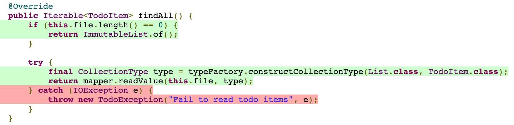
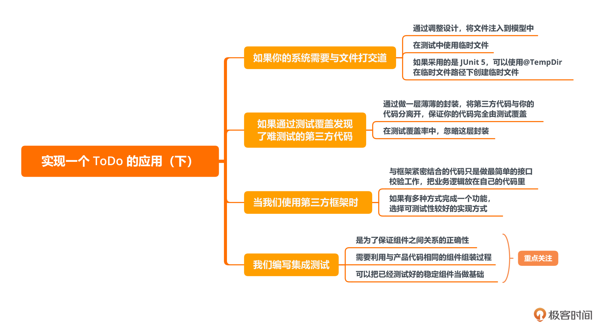

00 开篇词 为什么写测试是程序员的本职工作？
你好，我是郑晔！
看到开篇词的标题，你或许会疑惑，测试不是测试人员的本职工作吗？什么时候也成了程序员的本职工作了？
别急，让我换个问题来问问你。你说，程序员应该懂设计模式吗？大部分程序员都会说应该。而且很多人会说，这难道不是程序员的基本功吗？但你要知道，如果我们把时间往回拨，在 21 世纪初，程序员不懂设计模式才是常态，很多人会嘲笑设计模式让代码变得复杂了。
时代在要求我们写测试
之所以要说设计模式这个例子，主要是说程序员的职责范围是随着时间逐步变化的。这样的例子还有很多，迭代开发也好，开源项目也罢，这原本都不是程序员需要了解的。想当初，哪里有什么迭代开发，一个软件不开发个几年，怎么好意思出来见人。一个项目如果不是所有的代码都自己编写，怎么能有完全的掌控感，谁敢轻易使用别人开发的开源项目。而今天，哪个程序员不知道这些东西呢？
之所以程序员的职责范围一点点在拓展，关键原因就是，软件开发正在变得越来越复杂。而加入到程序员职责范围内的这些新东西，正是帮助程序员对抗越来越复杂的软件开发。迭代开发，让我们有机会把精力集中在最重要的功能特性上；开源项目，让我们可以减少不必要的代码编写。
测试同样如此，它可以让我们在越来越复杂的软件开发中能够稳步前行。一方面，在编写新功能时，测试可以让我们的代码正确性得到验证，让我们拥有一个个稳定的模块。另一方面，测试可以帮助我们在长期的过程中不断回归，让每一步走得更稳。
程序员圈子流传着一个关于测试的段子：每个程序员在修改代码时都希望有测试，而在写代码时，都不想写测试。
希望有测试，是因为测试可以给我们带来安全感。不想写测试，一方面，很多人会觉得麻烦，另一方面，也是更重要的，团队并没有要求。为什么很多团队不要求程序员都写测试呢？这里有一个很可悲的答案，因为大部分程序员都不会写测试。
大部分程序员不会写测试
看到这个结论，可能你会说，测试有什么难的吗？不就是用 xUnit 之类的单元测试框架写代码吗？程序员每天都在写代码，写代码的事能难倒程序员，这不是开玩笑吗？
如果你把这个问题抛给一个想写测试的程序员，他会告诉你，为了学着写测试，他了解过 xUnit 的框架，甚至看过人家演示 TDD 如何去做。看别人做起来，他觉得写测试挺容易啊。
可当他有了跃跃欲试的冲动，看到了自己的代码库，所有的兴奋都烟消云散了，他还是不知道怎么写出一个测试。可能是他的代码库太复杂了，他不知道该从哪里下手；也可能是跟着别人写测试很容易，而到自己写测试的时候，他都不知道第一个测试应该从哪里开始。
有很多反对自动化测试的程序员，他会给你很多他认为自动化测试不重要的理由。但如果有机会和他深入地聊进去，你会发现，本质的答案是他不会写测试。如果你非要问他测试如何写，他只能给你一些很宏观的角度，比如从接口上去测试、按照需求去测试云云。你会发现，这些原则上正确无误的说法，其实并不能很好地指导你的工作。讨论那么多，能力不足是原罪。
你的代码真的是高质量的吗？
刚刚我们聊了程序员写测试是大势所趋，以及大部分程序员并不会写测试。可能这还不能够完全说服你来写测试。那么现在我们不妨花一分钟的时间，来仔细想想这样一个问题：你对你编写的代码有信心吗？你能拍着胸脯说这是高质量的代码吗？
等等，这不是《程序员的测试课》吗？为什么这里要说编写高质量的代码？我是走错片场了吗？相信我，你没走错。程序员写测试就是为了编写高质量的代码。这里所说的高质量代码分成两个部分，一方面自然是我们常规理解的：经过测试的代码，质量会更高。另一方面，要想写好测试，代码本身的质量也要高。
对于今天的程序员来说，写测试就是程序员本职工作的一部分。毕竟，如果你连测试都做不好，那你对自己代码的信心从何而来呢？
给你讲个就发生在我身边的故事。有一次培训，我问了一个问题，作为一个程序员，在每次代码提交之前，你对自己编写的代码很有信心的请举手。有不少程序员骄傲地举起了手。我接着问，那你的信心是从哪来的呢？一个程序员回答说，我工作这么多年了，这点自信还是有的。嗯，不错。
你在提交之前，会验证一下吗？大部分程序员的手还是高高地举着。你是验证了这次编写的代码呢？还是验证所有的代码呢？很多人一脸茫然。一个程序员说，我能保证自己的代码没问题就行了，怎么能有时间验证所有的代码呢？那你怎么保证自己写的代码没有破坏已有的代码呢？不是还有测试同学吗？我顺便问了测试同学，你们会验证系统中所有的功能吗？一个测试同学说，我们也想，但功能太多了，验证不过来。
是的，这才是大多数团队在实际开发中的真相。大多数人对于编写代码只是有一种凭空的自信，我们并不知道每次提交的代码到底有多大的影响。所以，我们常常看到在生产环境中出了问题，定位半天居然是一个简单的错误。很多团队对于高质量代码的追求其实只是一种幻象。
这一次，我们就来一起打破幻象，学习编写真正的高质量代码。
学习写测试
怎么样才能学会写测试呢？最好的办法是跟着会写测试的人一起写一段时间，但整体行业的环境决定能提供这样机会的公司少之又少。大部分人学习测试，还是要通过阅读书籍。所以，经常有人让我推荐关于测试的书，遗憾的是，我确实没什么可以推荐的。
这些关于测试的书，要么是告诉你一些框架工具怎么用，这种东西通常看文档就能解决；要么是讲实践，比如 TDD，但还是那个问题，作者解决问题很爽，但和你有什么关系呢？归根结底，缺少一根主线，把所有这些东西连起来，让测试的知识成为一个整体。
所以，这次我准备了《程序员的测试课》，尝试把“一个程序员在日常工作中如何编写自动化测试”的相关知识梳理一遍，从实战出发，解除你对测试的一些误解，教会你一些上手可用的方法。
我把这个专栏分成了三个部分。
基础篇，为你讲解关于测试的基础知识。不同的是，在讲解具体的内容前，我会带你先从一个实例入手，让你看看怎么样用带测试的方式编写一段代码，告诉你一个新项目如何去做测试。当我们有了对于编写测试一个直观的认识之后，再来了解具体的测试知识，就可以有更深刻的体验了。
应用篇，为你介绍在一个后端项目中可以怎样做测试。在这个部分，我们同样会以实战开始，主要讲解使用 Spring 框架如何做测试。之所以选择 Spring 框架，一方面，它的使用非常广泛；另一方面，它对测试提供了非常好的支持。
扩展篇，为你介绍 TDD 和 BDD 两项开发实践。这两项实践离很多人的实际工作是有距离的，之所以大多数人不采用这样的工作方式，思维习惯是一方面，还有一方面就是欠缺测试的基础。当我们经过这个专栏的前面部分铺垫了测试的基础之后，再来看这些实践，你会有不一样的感受。
写在最后
最后，还是要做一个自我介绍。我叫郑晔，一个写代码超过二十年的程序员，做过与软件开发相关的各种工作：编代码、带团队、做咨询、写开源……
我已经在《极客时间》上写了三个专栏，把自己对于软件开发方方面面的思考总结在其中。所以，在这个专栏中，你常常会看到其他三个专栏的影子：
- 开发代码之前要做任务分解，这是《10x 程序员工作法》讲过的工作原则；
- 代码要可测，这是《软件设计之美》讲过的衡量设计优劣的一个重要标准；
- 代码要小巧，这是《代码之丑》讲过的代码追求的目标；
- ……
所以，如果你能把这几个专栏放在一起学习，一定会功力大增。另外，这个专栏中的实战部分，也算是给老同学们的一项福利，你们呼吁的实战环节，终于在这里成真了。
不过，即便你是新同学也无妨，从头到尾学习这个专栏，你就能收获到关于自动化测试的完整认知。为了不让有些同学失望，有一点我需要提前强调一下，这个课是给程序员的测试课，而非测试人员的测试课。所以，我们这个专栏的重点是如何做好自动化测试，而不是各种测试用例的设计方法。当然，如果有测试同学想深入到自动化测试，也欢迎你的加入。
准备好和我一起编写高质量的代码了吗？欢迎你加入我的专栏，让我们一起修炼，日益精进写代码的手艺！
01 实战：实现一个 ToDo 的应用（上）
你好，我是郑晔。
这一讲是我们整个专栏的第一节课。我在开篇词里说过，很多程序员之所以不写测试，一个重要的原因是不会写测试。所以，我们不玩虚的，第一节课直接带你上手实战。
我们要实现的是一个 ToDo 的应用，选择一个新项目开始，我们没有历史负担，对于学习如何写测试来说，是最容易的。整个实战分为了上下两节课，在这节课里，我们先来实现业务的核心部分，下一节课，我们把完整的应用实现出来。
这个 ToDo 应用本身非常简单，实现功能并不是我们这两节课的重点。一方面，你会看到如何解决问题的过程，比如，如何分解任务、如何设计测试场景、如何把测试场景转换为一个测试用例等等；另一方面，你也会看到，我是如何运用这些解决问题的过程一点点把问题解决掉，在整个开发的过程中如何写测试、写代码。
当你在实际工作中面对更复杂的问题时，这里面的代码对你的帮助可能不大，但这些解决问题的思路却会在工作中实际帮助到你。如果你订阅过我的前几个专栏，这算是一个完整的实战练习。
项目前的准备
在正式开始之前，我们一块来看下这个 ToDo 应用都有哪些具体需求（注：接下来的代码我会用Java来写，如果你没有购买过我的其他课程也没有关系，极客时间有免费试读额度，欢迎你点击文章里的超链接进行学习）。
- 添加 Todo 项。
todo add <item>
1. <item>
Item <itemIndex> added
- 完成 Todo 项。
todo done <itemIndex>
Item <itemIndex> done.
- 查看 Todo 列表，缺省情况下，只列出未完成的 Todo 项。
todo list 1. <item1> 2. <item2>
Total: 2 items
- 使用 all 参数，查看所有的 Todo 项。
todo list --all
1. <item1>
2. <item2>
3. [Done] <item3>
Total: 3 items, 1 item done
如果你订阅过我的《代码之丑》，你会发现，它就是我在《代码之丑》中给你布置的课堂练习作业的第一部分。如果你想对今天的内容有更深刻的理解，不妨先停下来，自己实现一遍这个需求，然后，再回过头看我是怎样解决这个问题的，对比一下实现方式的差异，记得要写测试哦！
为了厘清主线，不受细节的干扰，我在正文中只罗列了最关键的部分代码。如果你想看完整的代码，我在 GitHub 上为此专门建了一个项目，你可以去参考。
具体的需求有了，我们接下来怎么动手实现这个应用呢？我们先来做一些基础的准备工作：
- 一个项目自动化；
- 对需求进行简单的设计。
为什么要先从这些东西做起呢？我在《10x 程序员工作法》中曾经介绍过迭代 0 的概念，这是一个项目开始的基础准备，当然，因为我们这个是一个练习项目，所以，准备的内容相对来说，还比较少。
为什么要准备项目自动化呢？简单来说，就是防止自己犯一些低级错误。关于这个项目自动化中包含了哪些内容，我在《10x 程序员工作法》中也专门用了一讲的篇幅介绍，你如果有兴趣不妨去了解一下。
接下来，我们就要进行一些简单的设计了。
设计先行
虽说这个部分的要求是一个命令行的应用，但我们要知道，一个系统的业务核心与它呈现的方式并不是耦合在一起的。也就是说，命令行只是这个 ToDo 应用的一种呈现形式。在专栏后面你会看到，我们也可以把它改造成一个 REST 服务。
所以，我们首先要做一个设计，把核心的业务部分和命令行呈现的部分分开。在我们的工程中，它们分别被放到了两个模块里，一个是 todo-core，用来放置核心的业务部分；一个是 todo-cli，用来放置命令行相关的处理。这一讲，我们主要先来解决核心的业务部分，至于命令行相关的处理，那会是我们下一讲的主题。
我们先来处理核心的业务部分。这里的核心业务是什么呢？根据前面的需求，就只有三个操作：
- 添加一个 Todo 项；
- 完成一个 Todo 项；
- Todo 项列表。
接下来，我们可以用 DDD 战术设计的方法进行一下识别各个概念（如果你不了解战术设计的基本过程，可以去看看《软件设计之美》中的关于战术设计的过程）。
首先是名词，这里我们的核心对象只有一个，就是 Todo 项。Todo 项的核心字段就是它的内容，也就是我们在命令行里写下的内容。
有了名词，我们就要识别动作了。我们先来看领域服务，这里我们可以有一个 Todo 项服务，对应着我们的操作，它应该包含三个方法：
- addTodoItem，添加 Todo 项；
- markTodoItemDone，完成一个 Todo 项；
- list，列出所有的 Todo 项。
我们应用的需求比较简单，核心对象只有 Todo 项一个，也就不牵扯到多个对象的协同，所以我们这里就暂时不涉及到应用服务的设计。
服务只是操作，最终还要有一个地方把操作的结果存起来，在 DDD 中，这是 Repository 扮演的角色。所以，我们这里还需要一个 Todo 项的 Repository 用来处理与持久化相关的接口。
很多人一看到 Repository 这个概念，首先想到的是数据库，但正如你所见，这里并没有出现数据库。所以 Repository 并不是与数据库绑定在一起的，它只表示一种持久化的机制。在我们的这个版本实现里，这个 Repository 将会是一个文件的版本。
现在基本的设计有了，我们就要准备开始实现这个设计了。
任务分解
要从哪里开始实现呢？我们要从离我们需求最近的入口开始。通常来说，这个起点是应用服务，但是我们这里暂时没有应用服务，所以，我们可以从领域服务开始。
我们就按照需求的先后顺序，依次实现每个服务，首先是添加 Todo 项。
如果按照很多人通常的习惯，添加 Todo 项，就是创建一个 Todo 项，然后存在 Repository 里面。但这对我们的测试课来说是不够的，我们还得考虑一下这个行为要怎么测试。
要想测试一个函数，一个函数最好是可测的。什么是可测的？就是通过函数的接口设计，我们给出特定的输入，它能给我们相应的输出。所以，一个函数最好是有返回值的。我们可以这样来设计添加 Todo 项的函数接口。
TodoItem addTodoItem(final TodoParameter todoParameter);
在这个函数签名中，TodoItem 表示一个 Todo 项，而 TodoParameter 表示创建一个 Todo 项所需的参数（很多人可能会选择字符串作为入口参数，我曾经在《代码之丑》中讲过，使用一个更有业务含义的名字，比直接使用基本类型会更清楚）。
有了这个函数签名，我知道你已经迫不及待地要开始写测试了。但请稍等一下，我们要先来考虑一下测试场景，因为很多人写代码只会考虑到正常的场景，趁着我们还没开始写代码，最好把能想到的各种场景都考虑一下。
首先想到的是添加一个正常的字符串，这是我们的正常情况，没有问题。但是，如果添加的字符串是一个空的，我们该怎么处理呢？
一般而言，处理空字符串的方式有两种。一种是返回一个空的 TodoItem，一种是抛出一个异常。到底使用哪种做法，我们要考虑一下二者语义的差别。返回一个空的 TodoItem，表示这是一个可以接受的场景。而抛出一个异常，表示这不是一个正常的场景，它是一个“异常”。
就我们这里的场景而言，我们要从业务思考一下，确实有人可能在调用我们的命令时给出的参数是空，但考虑到 Fail Fast 原则，这种错误属于入口参数错误，应该在入口检测出来，不应该传到业务核心里面。
所以，我们可以将空传给业务核心部分视为“异常”。同时，我们也确立好了一条设计规范：对于输入参数的检测，由入口部分代码进行处理。
基于这条设计规范的考虑，如果是一个空的字符串，那么根本就不应该传到我们的领域服务中，应该直接在入口参数检测中就应该消灭掉。换言之，TodoParameter 就不会出现空字符串。所以空字符串这个事，我们就暂且不考虑了。
不过，这倒给我们提了一个醒，如果是 TodoParameter 为空呢？这种情况也不应该出现，所以我们可以把它当做异常来处理。
现在，我们这里就有了两个测试场景：
- 添加正常的参数对象，返回一个创建好的 Todo 项；
- 添加空的参数对象，抛出异常。
也许你还会想到几个场景，比如如果字符串重复了怎么办？答案是从目前的业务要求来说，字符串重复是可以接受的，只是添加了一个新的 Todo 项。所以，不需要为它做什么特殊的处理。
再有，如果存储到 Repository 的过程中出现了问题，比如磁盘满了，这样的问题属于不可恢复的异常，我们在业务处理中也做不了什么特殊的处理，只能把它抛出去。
一般来说，这种异常可以由 Repository 直接抛出一个 Runtime 异常，我们在业务处理不需要做什么。所以我们这里可以确立另外一条设计规范：Repository 的问题以运行时异常的形式抛出，业务层不需要做任何处理。
好，我们现在已经考虑了最主要的场景，下面就到了动手写代码环节了。
编写测试
我们从第一个测试场景开始，这个场景关注的是正常的参数对象。我们首先要做的是，把测试场景具象化成一个测试用例。
把测试场景具象成一个测试用例，也就是要把测试场景中空泛的描述变成一个个具体的参数。比如，添加正常的字符串。什么叫一个正常的字符串呢？在我们这个案例里面，它是相对于空字符串而言的，所以，我们这里需要给出一个非空的字符串。
如果有业务人员给我们一个具体的例子那是最好，如果没有，我会使用一些在测试中常用的词汇，比如：foo、bar 之类的。
到这里，我们就很容易写出一个测试的基本结构。
@Test
public void should_add_todo_item() {
TodoItemRepository repository = ...
TodoItemService service = new TodoItemService(repository);
TodoItem item = service.addTodoItem(new TodoParameter("foo"));
assertThat(item.getContent()).isEqualTo("foo");
}
你会发现这还是一段未完成的代码，原因就在于，我们还没有对 repository 这个变量进行处理。我们现在处理的重点是在领域服务上，而 TodoItemRepository 到底要怎么实现，我们还没有考虑。
我们现在对于 TodoItemRepository 的述求是它只要有一个 save 接口就好，至于它是数据库还是文件，根本不是我们现在关心的重点。
只有一个接口，我们该怎么用它呢？我们可以用 Mock 框架模拟出一个有这样行为的对象。Mock 框架就是根据预期的参数，给出相应的结果，这个结果可能是返回值，也可能是抛出异常。关于 Mock 框架更多的介绍，我们会在后面的部分专门讲解。
下面是增加了 repository 初始化的代码。
@Test
public void should_add_todo_item() {
TodoItemRepository repository = mock(TodoItemRepository.class);
when(repository.save(any())).then(returnsFirstArg());
TodoItemService service = new TodoItemService(repository);
TodoItem item = service.addTodoItem(new TodoParameter("foo"));
assertThat(item.getContent()).isEqualTo("foo");
}
这里我们用到的 Mock 框架是 Mockito，这里面有一句代码你或许会有点陌生。
when(repository.save(any())).then(returnsFirstArg());
这句代码表示当我用任意参数调用这个 repository 对象的 save 方法时，我预期它返回第一个参数作为返回值。对应到我们这里的语义，就是存进去什么对象，就返回什么对象。
另外，这里面用到的断言程序库是 AssertJ，它的 API 是流畅风格的 API（Fluent API），也就是连着的点点点。
有了这个测试，实现相应的代码就很容易了，相信你也很容易做到。
public TodoItem addTodoItem(final TodoParameter todoParameter) {
final TodoItem item = new TodoItem(todoParameter.getContent());
return this.repository.save(item);
}
这里最核心的 TodoItem 目前只包括一个内容的字段。
@Getter
public class TodoItem {
private final String content;
public TodoItem(final String content) {
this.content = content;
}
}
接下来，我们再来实现下一个测试。有了第一个测试的基础，第二个测试的关注点是空对象，你也应该能够很容易得写出来。
@Test
public void should_throw_exception_for_null_todo_item() {
assertThatExceptionOfType(IllegalArgumentException.class)
.isThrownBy(() -> service.addTodoItem(null));
}
根据第二个测试，我们的 addTodoItem 方法就需要增加一条对于空对象的处理。
public TodoItem addTodoItem(final TodoParameter todoParameter) {
if (todoParameter == null) {
throw new IllegalArgumentException("Null or empty content is not allowed");
}
final TodoItem item = new TodoItem(todoParameter.getContent());
return this.repository.save(item);
}
至此，添加 Todo 项的任务也算完成，我们可以运行一下命令做一下检查，看看我们是否有遗漏。
./gradlew check
这里的遗漏可能是由于编码风格，也可能是由于代码覆盖率导致，这也是我们为什么要把项目自动化放在最前面完成的原因。后面每完成一个任务，也应该运行一下这个命令，同样的事情，后面我就不再重复了。
到这里，关于如何添加测试编写代码的最基本思路，我们已经讲清楚了。接下来，我们来完成一个 Todo 项。完成 Todo 项的接口是这样的。
TodoItem markTodoItemDone(TodoIndexParameter index);
这里的入口参数是一个索引，只不过这里做了一次封装，封装出一个 TodoIndexParameter。
针对这个接口，我们考虑的测试场景包括：
- 对于一个已经存在的 Todo 项，将其标记已完成；
- 如果索引超出现有的索引范围，则返回空。
对于一个索引，你可能也会想到索引为负的场景。但同之前一样，这个问题应该是属于在入口就检验出来的问题，所以我们封装一个 TodoIndexParameter，这样在业务层就不需要考虑索引为负的场景了。
对于最后一个场景，当索引超出索引范围，返回空。鉴于空指针总是一个容易引起问题的场景，所以，我们这里采用 Optional 替代直接返回对象（关于 Optional 使用的基本思路，我在《软件设计之美》中讲过，如果你感兴趣可以去回顾一下）。
Optional<TodoItem> markTodoItemDone(TodoIndexParameter index);
我们先来编写这个接口的第一个测试。
@BeforeEach
public void setUp() {
this.repository = mock(TodoItemRepository.class);
this.service = new TodoItemService(this.repository);
}
@Test
public void should_mark_todo_item_as_done() {
when(repository.findAll()).thenReturn(ImmutableList.of(new TodoItem("foo")));
when(repository.save(any())).then(returnsFirstArg());
final Optional<TodoItem> todoItem = service.markTodoItemDone(TodoIndexParameter.of(1));
assertThat(todoItem).isPresent();
final TodoItem actual = todoItem.get();
assertThat(actual.isDone()).isTrue();
}
因为 service 的初始化和 repository 这个模拟对象的初始化几乎所有正常路径都要用到，所以，我们把它挪到 setUp 方法中，以便每个测试之前都能够运行它。
这个版本的实现采用了最为粗暴的方案，把所有的 Todo 项都加载到内存中，然后根据索引进行筛选。所以，这里我们用到了 findAll 方法。
这个实现不难，重要的变化是 TodoItem 需要有一个字段标记它的完成，代码如下。
@Getter
public class TodoItem {
private final String content;
private boolean done;
public TodoItem(final String content) {
this.content = content;
this.done = false;
}
public void markDone() {
this.done = true;
}
}
后面两个测试场景以及相应的实现代码，你可以参考开源项目中的代码，这里就不一一罗列了。
最后是 Todo 项列表，它的接口相对比较简单。
List<TodoItem> list(final boolean all);
其中，all 参数为 true 时，列出所有的 Todo 项；false 的时候，列出未完成的 Todo 项。
在需求中，缺省情况罗列的是未完成的 Todo 项，这是过滤掉已完成的 Todo 项的结果。但是，如果我们简单的采用按照列表的顺序作为索引，这就产生一个问题，每当有一个 Todo 项完成之后，剩余 Todo 项的列表顺序就会发生改变，这其实是不合适的。所以，我们最好把索引放到 Todo 项的实体中。
@Getter
public class TodoItem {
private long index;
private final String content;
private boolean done;
public TodoItem(final String content) {
this.content = content;
this.done = false;
}
public void assignIndex(final long index) {
this.index = index;
}
public void markDone() {
this.done = true;
}
}
这里我们把索引的赋值可以在服务中完成，也可以在 Repository 保存的过程中完成。从目前的情况看，这个索引的值与 Repository 现有的 Todo 项个数紧密相关，所以，我们可以把它放在 保存到 Repository 的过程中完成。也就是说，保存一个 Todo 项时，如果这个 Todo 项没有索引，就为它赋一个索引，如果有索引，就更新相应的 Todo 项。
针对这个接口，我们考虑的测试场景包括：
- 如果有 Todo 项，罗列 Todo 项时，列出所有的 Todo 项；
- 如果没有 Todo 项，罗列 Todo 项时，列出 Todo 项为空；
- 如果有未完成的 Todo 项，罗列未完成 Todo 项，列出所有未完成的 Todo 项；
- 如果没有未完成的 Todo 项，罗列未完成 Todo 项，列出的 Todo 项为空。
具体的代码也不在这里罗列了，你可以参考开源项目中的代码。
有时你会发现，虽然我们列出了很多测试场景，但当我们有了一些基础的代码之后，一些测试刚写完就通过了。比如，如果我们先写了罗列 Todo 项和罗列未完成 Todo 项的代码，后面两个测试场景很可能自然地就通过了。
这种情况在写测试的时候是很常见的，这说明，我们前面的代码已经很好地处理了这些情况。这并不说明这些测试场景是无用的，因为不同的实现方式并不能保证这些测试都是通过的，所以，既然我们已经为它们写了测试，保留在那里就好了。
到这里，我们已经把最核心的业务代码写完了，当然，它还不能完整地运行，因为它没有命令行的输入，也没有实现 Repository 的存储。但有了一个稳定的核心，这些东西都好办。下一讲，我们就来把这些东西都连接起来。
总结时刻
在这一讲里，我们实现 ToDo 应用的核心业务部分，这里面的重点并不是把代码写出来，我相信你有能力去编写完成这段代码。我在这里的描述更多的是在一个项目启动的初期要关注哪些内容，以及如何去着手去编写测试。
项目刚开始时，我们要准备哪些内容：
- 项目的自动化；
- 针对需求进行初步的设计。
着手编写代码时，我们要怎么做呢？
- 对要实现的需求进行任务分解；
- 在一个具体的需求任务中，我们可以从需求入口开始入手；
- 设计一个可测试的函数；
- 针对具体的函数，考虑测试场景；
- 针对具体的测试场景，将场景具象化成测试用例。
在梳理的过程中，我们还会针对一些统一的情况作出一些约定，成为项目整体的设计规范，比如，在这里我们约定：
- 对于输入参数的检测，由入口部分代码进行处理；
- Repository 的问题以运行时异常的形式抛出，业务层不需要做任何处理。
在编码的过程中，我们也看到了：
- 根据不断增加的需求，逐渐改动我们的设计，这就是演化式设计的基本做法；
- 我们对待测试也像对待代码一样，会消除代码中存在的一些坏味道。
如果今天的内容你只能记住一句话，那么请记住，细化测试场景，编写可测试的代码。

思考题
今天我分享了从一个需求入手，如何一步一步地写出测试。你在实际工作中是怎么做测试呢？如果你如果不做的话，原因又是什么呢？欢迎在留言区分享你的所见所闻。
参考资料
02 实战：实现一个 ToDo 的应用（下）
你好，我是郑晔！
在上一讲里，我们实现了一个 ToDo 应用的核心业务部分。虽然测试都通过了，但我相信你可能还是会有一种不真实的感觉，因为它还不是一个完整的应用，既不能有命令行的输入，也不能把 Todo 项的内容真正地存储起来。
这一讲，我们就继续实现这个 ToDo 应用，把欠缺的部分都补上。不过，在开始今天的内容之前，我仍需要强调一下，之所以我要先做核心业务部分，因为它在一个系统中是最重要的。很多人写代码的时候会急着把各个部分连接起来，但却忽视了核心业务部分的构建，这样做造成的结果就是严重的耦合，这也是很多后续问题产生的根源。
在上一讲里，我们已经有了一个业务内核，现在还欠缺输入输出的部分，也就是如何将Todo 项保存起来，以及如何接受命令行参数。
接下来，我们就分别来实现这两个部分。
文件存储
我们先来实现 Todo 项的存储。在上一讲中，我们已经预留好了存储的接口，也就是 Repository 这个接口。现在，我们只需要给这个接口提供一个相应的实现就好了。我们先来看看 Repository 接口现在是什么样子。
public interface TodoItemRepository {
TodoItem save(TodoItem item);
Iterable<TodoItem> findAll();
}
出于简单的考虑，我们要实现一个基于文件的存储。也就是说，给这个接口提供一个基于文件的实现版本。
首先，我们要决定一下把这个实现放到哪里。还记得我们一开始就分了两个模块吗？这两个模块一个是 todo-core，用来存放核心业务的代码；一个是 todo-cli，用来存放与命令行相关的代码。
那么这个基于文件的实现应该算在哪里呢？
其实放在哪里都可以讲出一定的道理。放在 todo-core 中，它算核心业务提供的一个实现，供外围使用；放在 todo-cli 中，它就是一个与 CLI 实现相关的部分。
既然都可以，我更倾向于放在 todo-cli 这个模块里，原因是我们最好保持核心业务的小巧，等到以后有机会遇到它需要提供给其它模块使用时，我们再来考虑把它挪到 todo-core 中。
确定了它的模块归属之后，我们进入到具体的工作中，先来确定它的测试场景：
- 使用 findAll 查询空的 Repository ，返回一个空的列表；
- 保存了 Todo 项之后，查询 Repository 返回保存了 Todo 项的列表；
- 修改已保存的 Todo 项，保存之后，查询 Repository 得到的应该是修改过后的 Todo 项；
- 保存空的 Todo 项，会抛出异常。
临时文件
与之前的测试完全可以在内存中执行不同，这回的测试要用到文件。为了保证测试是可以重复执行的，我们要确保所有的资源在执行之后要恢复原样。内存资源恢复原样是没有问题的，那文件怎么办呢？
文件是一个外部资源，如果用到的是一个普通文件，我们需要确定这个文件要存放在哪里、需要在保证测试执行之后把测试写入的内容清理掉……总之，有不少细节要考虑。所幸，在测试中使用文件是一种特别常见的需求，像 JUnit 这样成熟的框架已经给了我们一个标准答案，那就是临时文件。
更准确地说，JUnit 给出的方案是临时目录，在这个目录里，你怎么折腾都行。我们只要给一个变量标记上@TempDir，这个变量可以是作为一个测试函数的参数，也可以是一个测试类的字段。下面是我们的测试用例，在这里我们给类的一个字段标记上了@TempDir。
class FileTodoItemRepositoryTest {
@TempDir
File tempDir;
private File tempFile;
private FileTodoItemRepository repository;
@BeforeEach
void setUp() throws IOException {
this.tempFile = File.createTempFile("file", "", tempDir);
this.repository = new FileTodoItemRepository(this.tempFile);
}
@Test
public void should_find_nothing_for_empty_repository() throws IOException {
final Iterable<TodoItem> items = repository.findAll();
assertThat(items).hasSize(0);
}
...
}
文件编解码
有了测试，我们还需要考虑实现的问题。存储到文件里，必须要考虑的一个问题就是编解码的问题，也就是用什么样的格式进行文件存储，这是我们要做的一个设计决策。出于简单的考虑，我准备采用 JSON 这种最常见的格式。因为 JSON 格式的编解码有很多现成的方式，我们就不需要专门的处理了。
处理 JSON 格式，我选择的程序库的是 Jackson，这是行业中最主流的 JSON 处理程序库。就当前的情况来说，这个依赖只与 todo-cli 这个模块相关，所以，我们把 Jackson 的依赖添加到这个模块的构建脚本即可，也就是 todo-cli/build.gradle。
dependencies {
implementation("com.fasterxml.jackson.core:jackson-databind:$jacksonVersion")
}
这里的 jacksonVersion 是一个变量，我们把它配置在整个项目的 gradle.properties 文件里，方便对于依赖的管理。
jacksonVersion=2.12.3
添加了新的依赖之后，我们需要重新生成一下 IDEA 的工程，依赖就更新了，随后我们就可以继续工作了。
./gradlew idea
测试覆盖率
有了这个基础，我们可以很容易地把代码实现出来，比如，findAll 的实现就是下面这样。
@Override
public Iterable<TodoItem> findAll() {
if (this.file.length() == 0) {
return ImmutableList.of();
}
try {
final CollectionType type = typeFactory.constructCollectionType(List.class, TodoItem.class);
return mapper.readValue(this.file, type);
} catch (IOException e) {
throw new TodoException("Fail to read todo items", e);
}
}
当通过了所有的测试，我们就要提交代码了。在此之前，我们需要运行提交脚本。
./gradlew check
当我们很快地解决大部分像代码风格之类的低级问题之后，有一个问题就会卡住我们：测试覆盖率。
测试覆盖率给了我们发现代码问题的机会。我在构建脚本设定的测试覆盖率是 100%，所以，只要有测试覆盖不到的地方就会被发现。打开测试覆盖率的报告（具体位置在 $buildDir/reports/jacoco/index.html），它就会提醒我们哪里没有覆盖到，就像下面这样。

对于一些简单的场景，我们可以通过增加或调整测试就可以提高测试覆盖率。但有些问题就不是简单调整能够解决的。比如这里的异常处理，就像上面覆盖率报告中的 IOException。遇到这种情况，你会怎么办？
最糟糕的做法是，有测试不好覆盖，就认为测试没有价值，然后彻底放弃测试。这显然不是我们的选项。如果我们坚持测试，要怎么通过这一关呢？
一种做法是不分青红皂白，统一降低对于测试覆盖率的要求，也就是修改构建脚本中的设置。虽然这种做法可以让我们临时通过这一关，但这却会留下后患：以后有其它本可以测试覆盖到的部分，由于测试覆盖率的降低也会被忽略。
再有一种做法，就是把这些异常造出来。如果你运气好，有些异常可以通过看接口来大概猜测是怎么产生出来的。像这里的这段代码，如果出现异常很可能就是 JSON 格式不合法造成的。但有时候，我们需要仔细研究这个程序库的源代码，才能知道这个异常是怎么产生的。
知道异常怎么产生的是第一步，接下来，还需要制造出这个异常。像不合法的 JSON 格式还好办，有些异常则是你很难造出来的。比如，如果我们用到反射，API 会抛出 ClassNotFoundException，但只要你这个类加载了，就不会抛出 ClassNotFoundException。
我们需要知道的一点是，我们测试的目标是我们的代码，而不是这个难以测试的程序库。除非这个异常对我们来说至关重要，否则，为了写测试，去研究另外一个程序库，显然有点本末倒置了。
这也不行，那也不行，我们还有办法吗？通常来说，这种没法屏蔽掉的异常来自另外一个程序库，而使用这个程序库对我们来说，都是一些实现细节，那么我们可以将这些细节给封装起来。比如在前面代码里，抛出异常的主要是 readValue 这一句，它实现的就是一个文件中读取对象，我们可以把它封装到一个 JSON 处理的类中。
public final class Jsons {
private static final TypeFactory FACTORY = TypeFactory.defaultInstance();
private static final ObjectMapper MAPPER = new ObjectMapper();
public static Iterable<TodoItem> toObjects(final File file) {
final CollectionType type = FACTORY.constructCollectionType(List.class, TodoItem.class);
try {
return MAPPER.readValue(file, type);
} catch (IOException e) {
throw new TodoException("Fail to read objects", e);
}
}
...
}
我们在这里将异常封装成我们内部的运行时异常，外面就可以不用捕获处理了。相应地，findAll 的处理就可以调用这个封装出来的代码。
@Override
public Iterable<TodoItem> findAll() {
if (this.file.length() == 0) {
return ImmutableList.of();
}
return Jsons.toObjects(this.file);
}
经过这个改造，FileTodoItemRepository 就可以由测试完全覆盖了。或许你还会担心那个新的 Jsons 类没有办法测试覆盖。对于这个类，我们的方案是忽略掉它，不去做覆盖。处理手法就是在构建脚本中将它排除在测试覆盖之外。
coverage {
excludeClasses = [
...
"com.github.dreamhead.todo.util.Jsons"
]
}
为什么我们可以忽略它？一方面，这段代码很简单，几乎没有逻辑，因为它只是一个调用的封装。另外一方面，这里面主要的代码不是我们编写的，正如前面所说，我们测试的主要目的是测试我们自己写的代码，而不是别人的程序库。
这里小结一下，由于其它程序库造成难以测试的问题，我们可以做一层层薄薄的封装，然后，在覆盖率检查中忽略它。封装和忽略，缺一不可。
至于其它部分更具体的代码，我就不在这里展示了，你可以到开源项目中去查看细节。到这里，我们已经有了可以存储 Todo 项的仓库。基础已经具备，接下来，我们就要把所有这些东西都连起来，给它一个入口。
命令行入口
编写命令行入口，我们要选择一个程序库，省得自己从头编写各种解析的细节。在这里，我选择的程序库是 Picocli。
这个程序库可能你对它不是那么熟悉。那么对于一个新程序库来说，你的关注点是什么呢？绝大多数人拿到一个新程序库，重点都是赶紧让它跑起来，只要程序能够运行，其它的就不在乎了，甚至用来测试程序库怎么用的代码，最终也成为了代码仓库的一部分。
请千万记住，用来试验的代码永远是用来试验的代码。一旦我们掌握了一个程序库的基本用法，接下来，我们应该抛弃掉试验代码，重新设计，按照它应有的样子来使用这个程序库。
接口的选择
面对新的程序库，还有一个问题我们可能会忽略。有些程序库对同样一件事可以有多种不同的处理方式。比如就 Picocli 而言，同样是处理一个命令的参数，可以把它当做一个类的字段，像下面这样。
class AddCommand ...
@Parameters(index = "0")
private String item;
...
}
也可以当做一个函数的参数。
class AddCommand ...
public int add(@CommandLine.Parameters(index = "0") final String item) {
...
}
}
你会选择哪种做法呢？我的答案是选择可测试性好的。
就上面两种做法而言，同样是要做单元测试，第一种字段的方式，我需要通过反射的方式设置这个字段的值；而第二种参数的方式，我只要传参就好了。显然，第二种方式更简单。
或许你会好奇，既然第二种方式更简单，那为什么还会有第一种方式呢？因为如果你不考虑测试而只考虑写代码的话，第一种方式用起来更容易。
一个是容易写，一个是容易测，这就是两种不同编码哲学的取舍。
当然，这个讨论是在我们有选择的情况下进行的，有些程序库并没有给我们提供这些选择。很多程序库只有一种做法，而且通常是容易写的做法，这个时候单元测试就比较麻烦。不过通常来说，这种情况都出现在边缘的部分，我们可以考虑这个部分的测试是用单元测试，还是用集成测试。
测试的选择
做好了基础的准备，现在我们准备开始测试了。同样，我们也要准备测试场景。在命令行接口我们要测的是什么呢？其实，主要的业务逻辑已经在前面的测试中覆盖到了，命令行接口主要就是完成与用户输入相关的一些处理。
还记得前面我在讨论业务处理时遗留的内容吗？没错，用户输入相关的一些校验要放在这里来做，剩下的就是转给我们领域服务的代码，也就是 TodoItemService。
有了这个理解，我们来罗列一下测试场景：
- 添加一个正常的 Todo 项，该 Todo 项可以查询到；
- 添加一个空的 Todo 项，提示参数错误；
- 标记一个已有的 Todo 项为完成，该 Todo 项的状态为已完成；
- 标记一个不存在的 Todo 项为完成，提示该项不存在；
- 标记一个索引小于 0 的 Todo 项为完成，提示参数错误；
- 列出所有 Todo 项，缺省为列出所有未完成的 Todo 项；
- 用“-a”参数列出所有的 Todo 项，列出所有的 Todo 项。
如果你是跟着我一路走到了现在，怎么把这些测试写出来对你来说应该已经不是太大的问题了。但在编写代码之前，还有一个问题要考虑，我们准备写什么样的测试呢？
我们前面编写的测试都是单元测试，也就是针对一个单元进行的测试。如果按照单元测试的编写逻辑来写这段代码，最简单的做法是 mock 一个 TodoItemService 作为参数传给我们的命令类，这种做法本身是没有问题的。
虽然我们能够保证所有的单元正常运作，但这些单元配合在一起是否依然能够正常运作呢？这可不一定。因为除了要保证单元的正确，我们还要保证单元之间的协作也是正确的。你或许已经知道我要说什么了，没错，除了单元测试，我们还需要集成测试。
之所以要在这里讨论集成测试，因为我们前面已经把主要的业务逻辑已经完成了，最后的这部分代码实际上只是对业务逻辑做一个简单的封装，这会是非常薄的一层。所以，这层如果做单元测试，除了参数校验的部分，剩下的主要工作都是转发，将处理逻辑转发给服务层。所以，出于实用的考虑，我们不妨在这里就用集成测试代替单元测试，简化测试的编写。
如果我们在这里准备编写的是集成测试，与编写单元测试不同的一个关键点就是，这里采用的服务对象是真实的对象，而不是模拟对象。这就需要我们按照业务对象的组装规则将真实的对象组装起来。在我们这个例子里面，因为涉及的对象都比较简单，所以，我们暂且采用直接对象组装的方式。在很多项目里面，对象组装的工作是由 DI 容器完成的。
为了保证组装过程的一致，我们可以把组装过程单独拿出来，让最终的代码和测试代码复用同样的逻辑。
public class ObjectFactory {
public CommandLine createCommandLine(final File repositoryFile) {
return new CommandLine(createTodoCommand(repositoryFile));
}
private TodoCommand createTodoCommand(final File repositoryFile) {
final TodoItemService service = createService(repositoryFile);
return new TodoCommand(service);
}
public TodoItemService createService(final File repositoryFile) {
final TodoItemRepository repository = new FileTodoItemRepository(repositoryFile);
return new TodoItemService(repository);
}
}
这个组装逻辑本身没有任何复杂的地方，不过，有一点是需要我们在写这段代码时要考虑清楚的，就是把组装的边界设置在哪里。换句话说就是把什么样的部分放在组装过程中，什么样的部分不放。因为放太多的话，测试可能会不方便；太少的话，会让集成本身变得意义不大。
在上面这段代码里，我们把边界设置在了文件接口，也就是 createService 这个函数的参数。这样处理的话，在产品的代码中，我们可以就用正式的文件；而在测试环境中，就可以采用临时文件。
class TodoCommandTest {
@TempDir
File tempDir;
private TodoItemService service;
private CommandLine cli;
@BeforeEach
void setUp() {
final ObjectFactory factory = new ObjectFactory();
final File repositoryFile = new File(tempDir, "repository.json");
this.service = factory.createService(repositoryFile);
cli = factory.createCommandLine(repositoryFile);
}
你会看到，在这里我们除了声明最外面的调用接口（也就是 cli ）之外，还声明了一个变量 service，它是做什么用的呢？我们不妨看一下下面这个测试。
@Test
public void should_mark_as_done() {
service.addTodoItem(TodoParameter.of("foo"));
cli.execute("done", "1");
final List<TodoItem> items = service.list(true);
assertThat(items.get(0).isDone()).isTrue();
}
标记一个 Todo 项为已完成，但前提条件是要有一个 Todo 项供你去标记。那怎么把这个 Todo 项添加进去呢？一种做法是调用我们的命令行接口，但要知道，我们在这里测试的目标就是命令行接口，也就是 add，而我们这里测试的主要接口是 done。
写测试要尽可能减少对于不稳定组件的依赖，done 接口已经是一个不稳定的了，再加上 add，测试出问题的概率就会进一步增大。
所以，这里我们用了另外一种做法。service 是我们之前已经测试好的组件，我们可以把它看成一个稳定的组件，所以，这里我们使用了 service 添加 Todo 项。
具体的代码你可以参考我的开源项目，这里就不再进一步罗列了。
总结时刻
今天我们在核心业务的基础上，补齐了输入输出的部分。不同于之前所有的代码都是在内存中执行的情况，一旦牵扯到输入输出，我们就要考虑更多的问题。这一讲我们遇到的很多问题，可能也是你在实际的测试工作中会遇到的。
如果你的系统需要与文件打交道：
- 通过调整设计，将文件注入到模型中；
- 在测试中使用临时文件；
- 如果采用的是 JUnit 5，可以使用@TempDir 在临时目录下创建临时文件。
如果通过测试覆盖发现了难以测试的第三方代码：
- 通过做一层薄薄的封装，将第三方代码与你的代码分离开，保证你的代码完全由测试覆盖；
- 在测试覆盖率中，忽略这层封装。
当我们使用第三方框架时：
- 与框架紧密结合的代码只是做最简单的接口校验工作，把业务逻辑放在自己的代码里；
- 如果有多种方式完成一个功能，选择可测试性较好的实现方式。
我们编写集成测试：
- 是为了保证组件之间协作的正确性；
- 需要利用与产品代码相同的组件组装过程；
- 可以把已经测试好的稳定组件当做基础。
如果今天的内容你只能记住一件事，那请记住：隔离变化，逐步编写稳定的代码。

思考题
一旦你开启了对测试的思考，我们就能发现更多的思考角度，比如：控制台输出应该怎么测试？这个问题就是今天留给你的思考题了。在这个现有的项目基础上，增加对于控台输出的测试，你会怎么做呢？欢迎在留言区分享你的做法。
03 程序员的测试与测试人员的测试有什么不同？
你好，我是郑晔！
前面用了两讲的篇幅，我们一起一步一步地用带测试的方式完成了一个项目，现在相信你已经对如何在实际工作中编写测试有了一个初步的认识。有了实践的根基，我们还需要对如何编写测试有一个更全面地理解，以便日后能够更好地应对各种场景。
关于测试，许多程序员的第一个问题就是：测试不是测试人员的工作吗？如果我把测试写了，那是不是就抢了测试人员的工作呢？
不瞒你说，之所以我要把这个话题放在专栏前面讲，一个重要的原因就是我当年真的就这么想过。好，今天我们就来聊聊程序员的测试和测试人员的测试究竟有哪些不一样的地方。
程序员的测试能否替代测试人员的测试？
我给你讲一个我在职业生涯初期的故事。那时候，我刚刚踏上自己的程序员精进之路，我不断地寻找着各种能够更好地写程序的方式。当我意识到测试对于编程的重要性时，我就开始有意识地在写代码的时候编写测试，尽我所能把各种场景都考虑到。作为一个骄傲的程序员，我总是希望自己的代码是无懈可击的。
有一次，我写了一个协议的解析器，我把各种字段缺失或不正确的场景都处理了。结果交给测试同学后，他上来就发了一个空包，然后我的代码就崩溃了。我当时的第一反应是，你怎么能这么做？测试同学却反问，我为什么不能这么做？
是啊，为什么不能呢？测试同学只要能做到，他就可以这么做。而且，只要测试同学能做到，其他人也可能做到。
可以说，这件事彻底改变了我对测试人员的认识。相信很多人和从前的我一样有个偏见，认为测试同学不过是做一些简单的验证，或者只是因为自己时间不充足，有些细节没考虑到，让他们给抓住点小问题。作为程序员，只要自己认真了，其实就没测试什么事了。然而，这次的事告诉我，即便我全力以赴了，测试同学依然可以发现问题。
从此，我对测试人员的看法彻底转变了。在我随后的职业生涯中我发现，只要团队里有合格的测试人员，他总会以你想不到的角度，发现系统中意想不到的问题——即便团队已经写了很多的测试。
说到这，你就可以放心了，即便我们程序员把测试都写好了，测试人员也不会失业，他们总能找到问题。但下一个问题就随之而来了，测试人员的测试和程序员的测试到底有什么不一样，以至于即便是程序员已经很努力了，依然很难做到对测试场景全面的覆盖呢？
答案很简单，因为视角不同。
程序员的出发点是实现，而测试人员的出发点是业务。把这话翻译成你更熟悉的测试术语，那就是程序员的关注点是白盒测试，而测试人员则是黑盒测试。
程序员关注到的测试是站在实现的角度，即便我们能够先去设计测试场景，即便我们有测试覆盖率帮我们查缺补漏，但我们所做的一切都是建立在一个共同的前提下：我们要把代码写出来。
而测试人员则不同，他们并不关心代码是怎么实现的，他们只是站在业务的视角在想问题，他们考虑更多的是这个系统可以怎么用。只要二者的出发点不同，对于同样的事物，总会看到不同的东西。不然的话，人类社会哪有那么多的争论。
你或许会想，那我也从业务的角度去想，是不是就能获得测试人员的视角呢？
我要说，从业务角度思考，确实是我们向测试人员学习的一个重要方向。但同样不要指望你换个角度思考一下就能把测试人员代替了。人的注意力是有限的，作为一个程序员，我们会把更多的时间放在关于技术实现的思考上，我们在发现问题上的训练强度是远远不够的。所以，人们常说，别用你的业余爱好去挑战别人吃饭的本事。
程序员做测试，测试人员也做测试，那是不是测试人员的工作量就小多了？实际上，只要你稍微和测试同学交流一下你就会发现，在实际的工作中，大部分测试同学根本没有机会使出全力。
在测试的分类中，有一种测试叫探索性测试，也就是测试人员竭尽所能去对系统去做测试。不过，虽然有这么个分类，但大多数测试人员并没有机会去做这种测试。不是因为他们偷懒，而是由于大部分系统的基础质量不高，造成的结果就是，测试同学的大部分工作找到的都是极其简单的 bug。换言之，如果程序员能够把自己的测试做好，很多问题就应该被消灭在萌芽状态，根本不应该到测试同学这里。
如果程序员能够提交一个经过自己测试的系统，测试同学才有机会让自己从日常琐碎的工作摆脱出来，去竭尽全力地测试一个系统。不是测试同学不努力，实在是系统太差劲。
在我工作过的测试做得比较好的团队，软件质量整体上来说，确实要好上很多。测试同学有机会进行各种探索性测试，因为基础的问题都会在程序员的测试中被覆盖了。
好，到这里，我们也就回答了一开头的那个问题：程序员的测试不能够替代测试人员的测试。我们也不用替测试人员担心他们的职业前景了。那反过来，既然在测试方面，测试人员还是有着自己的优势，那是不是我们可以从他们身上学到点什么呢？
向测试人员学习
首先，我要帮你纠正一个典型的误区。有一些人认为，测试做得好要依赖于工具。确实，今天的测试已经不像过去那么纯手工了，各种工具层出不穷，甚至很多项目为了测试要开发自己的测试工具。但无论是什么样的测试工具，都只是提升效率的一种手段。如果没有背后的测试思维支撑，再好的工具，也是没用的。
与其纠结于寻找更好的工具，更重要的是要向测试人员学习他们的思维方式。
前面我们已经提到了一点，测试人员拥有业务视角，这是最值得程序员去学习的。通常来说，测试人员对于业务的理解都会很深刻。在我之前的经历里，如果一个团队缺少业务分析师，有时候，我会让一个测试人员顶上去，而且效果往往还不错。
程序员对业务视角的忽略是一个普遍存在的问题，但这也是一个程序员必须要突破的关口。实际上，让程序员拥有业务视角不仅仅是测试的需求，同样也是写好代码的要求。现在流行的 DDD 设计方法的核心就是要让业务人员和开发团队使用一样的通用语言（Ubiquitous Language）。由此我们知道，写代码要尽可能用业务语言写代码。
有了业务视角，再深入一步，我们要学会设计测试。
设计测试的一个关键点是找到更多的测试场景。这里面我们说的测试场景，你可以把它理解成一个大的分支条件。其实很多时候，程序员与测试人员的差距，从测试场景这一步已经开始显现出来了。
很多测试场景程序员压根就没想到，所以，就很难说进一步地去测试了。在前面我自己的经历里，我只想到了协议包不正确的各种情况。但空协议包这种场景在我的思考里压根就没有，所以，我发现不了其中的问题就再正常不过了。
针对测试场景，我们还需要考虑各种情况。在这里我们说的各种情况，你可以把它理解成在一个测试场景下的各种小分支。通常来说，正常情况大家都能想到怎么解决，程序员欠缺的往往是各种异常情况的处理。
举个例子，同样是注册的场景，程序员都会考虑到正常注册的情况。但如果注册的用户名里包含各种符号该怎么办，甚至有些测试人员会想到如果字符串超长的情况该怎么办（比如几 K 字节的字符串），这些都是对不同的异常情况的思考。
诚如前面所说，很难指望每个程序员都能把所有的情况考虑到，但程序员每多想到一点，软件质量就能多提高一点。
在《10x 程序员工作法》中我曾经讲过，每个需求都应该有验收条件。验收条件是很多测试人员设计测试的出发点，这也是我们可以向测试人员学习的最直接方式，当然，前提条件是你们的团队有验收条件。如果没有，那你需要赶紧去建立这项团队实践。
其实在实际工作中，程序员与测试人员如果能够工作在一个团队里，那就有一个更简单的做法来提升软件质量，就是测试人员设计好了测试用例之后在团队内部做一个分享，让相关的程序员能够有一个参考去编写自己的测试。
不过，请你放心，虽然他们已经把测试用例分享给你了，在测试过程中，他们还会发现更多新的测试用例。如果程序员有了编写测试的习惯，那测试人员在测试过程中发现的问题，也可以成为一个新的测试项，成为程序员编写测试的一部分，我们可以用代码把这个用例固化下来。
测试人员把用例分享给程序员，程序员用代码固化新的测试用例，这样，测试人员和开发人员之间就形成了一个良好的互动，我们也就有机会让软件的质量越做越好。
总结时刻
今天，我们谈到可能是不写测试的程序员关于测试问得最多的一个问题：程序员写测试，那测试人员怎么办？
程序员和测试人员拥有不同的视角，程序员更关注实现，而测试人员更关注业务，所以，即便程序员编写测试，也很难覆盖所有的情况。实际上，即便是测试人员也不敢说自己能够覆盖所有的情况。
目前大多数团队的情况是，测试人员并没有得到充分的发挥。只有程序员做好了自己的测试，测试人员才能从日常琐碎的验证工作中解脱出来，去做更有价值的测试。
在测试问题上，程序员应该向测试人员学习，与工具相比，更重要的是思维方式。我们可以像测试人员一样从测试场景入手，多考虑各种情况，尤其是异常情况。需求的验收条件是一个很好的测试起始点。
在团队中，测试人员可以把自己的测试用例分享给程序员，而程序员可以把新的测试用例用代码的方式固化下来，二者就此可以形成良好的互动。
其实，具体确定测试用例的方法有很多，比如边界值分析、等价类划分等等，这都是测试同学会更深入了解的内容，如果这一讲的内容让你对测试产生一些兴趣，你不妨去找本书读读，比如《软件测试的艺术》，或者找个测试同学深入请教一番。
如果今天的内容你只能记住一件事，那请记住：测试从测试场景入手，多考虑各种情况，尤其是异常情况。
思考题
今天我们讲了程序员和测试人员之间的关系，你在实际工作中，从测试同学身上学到了哪些东西呢？欢迎在留言区分享你的经历。
04 自动化测试：为什么程序员做测试其实是有优势的？
你好，我是郑晔！
在上一讲里，我们讨论了程序员做测试和测试人员做测试之间有什么不同，你现在应该不会担心因为程序员做测试就抢了测试人员的饭碗了。这一讲，我们来谈谈程序员做测试的优势所在。估计你已经想到了，没错，就是自动化测试。
其实，程序员的主要工作就是打造各种自动化工具，无论是为了业务的支撑，或者是对于开发过程本身的支持。自动化，一方面是为了提高效率，另一方面，也是将低效繁琐的工作交由机器去完成。（关于自动化的种种思考，我在《10x 程序员工作法》中有了一个模块进行讲解，如果你有兴趣不妨去回顾一下。）
测试这种工作其实非常适合自动化，因为在整个软件的生命周期之内，新的需求总会不断出现，代码总会不断地调整。鉴于大部分软件常常都是牵一发动全身，所以，即便是只改动了一点代码，理论上来说也应该对软件的全部特性进行完整验证。如果只靠人工来做这个事情，这无疑是非常困难的。
很多团队只依赖于测试人员进行测试，而且测试以手工为主，结果就是大部分时间都是在进行低效地验证工作，而这些工作恰恰是最适合用自动化测试完成的。
从自测到自动化测试框架
你平时是怎么验证自己代码正确性的呢？最不负责任的做法是压根不验证，我曾见过最极端的做法是连编译都不通过的代码就直接提交了。不过，这是我职业生涯早期发生的事情。随着行业整体水平的提高，这种事情现在几乎看不到了。
现在很多人的做法是把整个系统启动起来，然后手工进行验证。当然，大多数人不会验证系统里面所有的内容，只会针对自己正在开发的部分进行验证。这种做法通常只能够保证自己刚刚编写的代码是正确的。结果常常是按下葫芦浮起瓢——这个功能是对了，但之前原本验证好的功能又不对了。
即便是一个再小的系统，其中的细节也多到没有人愿意每次去手工验证其中所有的细节。因为这样做既琐碎又重复，这显然是适合自动化发挥战斗力的地方。
最开始的自动化都是很简单的。通常来说，就是直接写一个 main 函数，直接调用代码中的模块。但每次要测试不同的代码时，程序员就要注释掉原来的测试代码，然后，再编写新的测试代码。
这种做法虽然可以去验证代码的正确性，但显然不适合反复验证。稍微优化点的做法就是把一个个测试用例放到不同的函数里。总的来说，这个阶段的自动化测试还处于草莽阶段。
真正让自动化测试这件事登堂入室的，就是自动化测试框架了。最早的测试框架起源是 Smalltalk 社区。Smalltalk 是一门早期的面向对象程序设计语言，它有很多拥趸，很多今天流行的编程概念都来自于 Smalltalk 社区，自动化测试框架便是其中之一。
不过，真正让测试框架广泛流行起来，要归功于则另外的自动化测试框架 JUnit，它的作者是 Kent Beck 和 Erich Gamma。Kent Beck 是极限编程的创始人，在软件工程领域大名鼎鼎，而 Erich Gamma 则是著名的《设计模式》一书的作者，很多人熟悉的 Visual Studio Code 也有他的重大贡献。
有一次，Kent Beck 和 Erich Gamma一起从苏黎世飞往亚特兰大参加 OOPLSA（Object-Oriented Programming, Systems, Languages & Applications）大会，在航班上两个人结对编程写出了 JUnit。从这个名字你不难看出，它的目标是打造一个单元测试框架。二人之所以能够在一路上就完成 JUnit 最初版本的开发，是因为他俩本身就在 Smalltalk 社区摸爬滚打了一段时间，对 Smalltalk 的单元测试框架有着很深刻的认识。
今天流行的自动化测试框架统称为 xUnit，因为它们都有一个共同的根基，也就是 JUnit。所以，只要了解了 JUnit 中的基本概念，你再去看其它测试框架，几乎都是差不多的。
测试框架简介
接下来，我们就来一次快速的自动化测试框架简介，如果你已经对自动化测试框架非常熟悉的话，可以当做一次轻松的复习。
我们理解测试框架有两个关键点，一是要去理解测试组织的结构，一是要去理解断言。掌握了这两点，就足够应付日常的大多数情况了。
测试结构
我们先来看看组织测试的结构。首先，最核心的概念就是怎么表示一个测试用例。JUnit 怎么表示测试用例，我们在前面讲实战的时候已经见识过了，代码如下所示。
@Test
public should_work() {
...
}
我们前面说过，草莽阶段稍微优化一点的做法就是把测试用例放到一个个不同的函数里面，而测试框架就是把这种做法做了一个延伸，同样是用一个一个的函数表示一个一个的测试用例。不同的是，在草莽阶段，你每写一个函数就要在执行的部分注册一下这个函数。
使用测试框架的话，需要对表示测试用例的函数进行统一的标识，以便框架能够在运行时识别出来。在我们上面这个例子里面，用来识别测试用例的就是@Test。如果你用过 4.0 之前版本的 JUnit，它是约定以 test 开头的函数就是测试用例，所以，你会看到下面这样的写法。
public test_should_work() {
...
}
两种不同的写法本质上是程序设计语言层面的差别，因为 Java 5 引入了 Annotation 这个语法，才有了基于@Test 进行标注的做法。很多的语法层面的改进都是为了提升语言的表达能力，而这一点在程序库的设计上体现得最为明显。如果你去看不同程序语言的测试框架时就会发现，做得比较差就是直接照搬 test 开头的做法，而做得比较好的则是会结合自己的语言特点。
了解了最基本的测试用例结构，其实写测试就够了。但是，测试也是代码，好的测试代码要兼具好代码的属性，最基本的要求就是消除重复。
比如，同样的初始化代码反复在写，由于测试的特殊性，这些初始化的代码需要在每个测试之前都去执行。为了解决这个问题，JUnit 引入了 setUp 去做初始化的工作。在 JUnit 4 之后，这个由函数名称进行定义的做法，改成了使用 @BeforeEach 进行定义的方式。我们在前面的实战中也提到过。
@BeforeEach
void setUp() {
...
}
由于 @BeforeEach 的存在，setUp 这个名字在这里已经没有意义，只不过因为这是一个函数，需要有一个名字。从习惯上，我们还是称呼它为 setUp 函数。如果 JUnit 进一步将语法升级到 Java 8 的语法，这里完全可以使用 lambda，去掉对名字的依赖。
与 @BeforeEach 和 setUp 对应的是 @AfterEach 和 tearDown，它们处理的是要在每个测试之后执行的清理工作。相对来说，这一对用的就比较少了，除非是你用到了一些需要释放的资源。
知道了测试用例的写法，知道了 setUp/tearDown，你就基本上掌握了测试结构的核心了。如果你具体学习一个测试框架，还会有人告诉你 TestSuite、TestRunner 等等的概念，但它们现在基本上可以归入到实现层面了（也就是执行测试所需要了解的概念），而在编写代码的层面上，有前面说到的这几个概念就够了。
断言
我们接下来看理解测试框架的第二个关键点，断言。测试结构保证了测试用例能够按照预期的方式执行，而断言则保证了我们的测试需要有一个目标，也就是我们到底要测什么。
断言，说白了就是拿执行的结果和预期的结果进行比较。如果执行一个测试连预期都没有，那它到底要测什么？所以，我们可以说，没有断言的测试不是好测试。
几乎每个测试框架都有自己内建的断言机制，比如下面这个。
assertEquals(2, calculator.add(1, 1));
这个 assertEquals 是最典型的一个断言，也几乎是使用最多的断言，很多其它语言的测试框架也把它原封不动地搬了过去。但这个断言有一个严重的问题，你如果不看 API，根本记不住哪个应该是预期值，哪个应该是你函数返回的实际值。这就是典型的 API 设计问题，让人很难用好。
所以，社区中涌现了大量的第三方断言程序库，比如，Hamcrest、AssertJ、Truth。其中，Hamcrest 是一个函数组合风格的断言库，一度被内建到 JUnit 4 里面，但出于对社区竞争的鼓励，JUnit 5 又把它挪了出来，下面是一段使用了 Harmcrest 的代码。
assertThat(calculator.subtract(4, 1), is(equalTo(3)));
AssertJ 是一种流畅风格的程序库，扩展性也非常不错，它也是我们在前面实战部分选择的程序库，下面是一段使用了 AssertJ 的代码。
assertThat(frodo.getName()).startsWith("Fro")
.endsWith("do")
.isEqualToIgnoringCase("frodo");
Truth 是 Google 开源的一个断言库，和 AssertJ 很类似，它对 Android 程序支持得比较好，我也放了一段代码，风格上和 AssertJ 如出一辙。
assertThat(projectsByTeam())
.valuesForKey("corelibs")
.containsExactly("guava", "dagger", "truth", "auto", "caliper");
断言，不仅仅包括有返回值的处理，还包括其它的特殊情况，比如，抛出异常也可进行断言，这是 JUnit 5 内建的异常断言，你可以参考一下。
Assertions.assertThrows(IllegalArgumentException.class, () -> {
Integer.parseInt("One");
});
具体有哪些情况可以进行断言，你可以查阅所使用断言库的 API 文档。
最后，我还要讲一个不在这些断言库里的断言，那就是 Mock 框架提供的一种断言：verify。
关于 Mock 框架，后面我们还会讲到，这里只是简单地提一下，verify 的作用就是验证一个函数有没有得到调用。在某些测试里面，函数既没有返回值，也不会抛出异常。比如拿保存一个对象来说，我们唯一能够判断保存动作是否正确执行的办法，就是利用 verify 去验证保存的函数是否得到调用，就像下面这样。
verify(repository).save(obj);
虽然它不在断言库中，但它确确实实是一种断言，它判断的是一个动作是否得到正确的执行。所以，当我们说一个测试应该包含断言时，有 verify 的情况也算是有断言了。至于怎么用好 verify，我们后面讲到 Mock 框架时再说。
讲过测试结构和断言，我们已经把测试框架的核心内容说完了。但这些只是写测试的基础，要想写好测试，我们还需要对什么样的测试是好的测试有个基本的认识，这就是我们下一讲要讲的内容了。
总结时刻
这一讲，我们讲了程序员在测试上的优势所在，也就是自动化。软件开发本身就是一个不断迭代的过程，对每一次代码的改动来说，理论上就应该把整个系统从头到尾地测一遍。这种工作手工做是非常琐碎的，所以非常适合使用自动化。
验证程序的正确性是程序员的基本工作，不过，很多人的做法还是手工验证。为别人打造自动化工具的人，自己的开发过程还不够自动化，这是很多程序员面对的尴尬。实际上，还有一些人在探索自动化的做法，从最早的 main 函数，到后来的自动化测试框架，就是在这方面一点一点的进步。自动化测试框架的出现，让自动化测试从业余走向了专业。
理解自动化测试框架，主要包含两个部分：组织测试的结构以及断言。组织测试的结构最核心的就是测试用例如何写，以及 setUp 和 tearDown 函数。而断言则是保证了我们测试的目标。断言程序库有很多，你可以根据自己的喜好进行选择。除了断言程序库，Mock 框架的 verify 也是一种断言。
如果今天的内容你只能记住一件事，那请记住：没有断言的测试不是好测试。
思考题
今天我们讲了自动化测试框架最核心的部分，但现在的测试框架都已经有了更多丰富的功能，希望你找一个你喜欢的测试框架，深入地了解一下它们新特性，挑一个让你印象深刻的特性和我们分享。期待在留言区看到你的想法。
05 一个好的自动化测试长什么样？
你好，我是郑晔！
在上一讲里我们讲了测试的一个关键点是自动化测试，而自动化刚好是程序员的强项。自从有了自动化测试框架，自动化测试就从业余走向了专业，但这并不是说，有了测试框架你就能把测试写好了，我们来看几个典型的问题：
- 测试不够稳定，一次运行通过，下次就不能通过了；
- 要测的东西很简单，但是为了测这个东西，光是周边配套的准备就要写很多的代码；
- 一个测试必须在另一个测试之后运行；
- ……
这是让很多团队在测试中挣扎的原因，也是很多人放弃测试的理由。之所以测试会出现这样那样的问题，一个重要的原因是这些测试不够好。这一讲，我们就来讲讲好的测试应该长什么样。
测试的样子
关于自动化测试，其实有一个关键的问题我们一直还没有讨论。我们用测试来保证代码的正确性，然而，测试的正确性如何保证呢？
这是一个会问懵很多人的问题：测试保证代码的正确性，那测试代码的正确性也用测试保证？但你见过有人给测试写测试吗？没有。因为这是一个循环的问题，你给测试写了测试，那新的测试怎么保证正确性呢？难不成要递归地写下去？是不是有种大脑要堆栈溢出的感觉了。
既然给测试写测试不是一个行得通的做法，那唯一可行的方案就是，把测试写简单，简单到一目了然，不需要证明它的正确性。由此，我们可以知道，一个复杂的测试肯定不是一个好的测试。
简单的测试应该长什么样呢？我们一起来看一个例子，这就是我们在实战环节中给出的第一个测试。
@Test
public void should_add_todo_item() {
// 准备
TodoItemRepository repository = mock(TodoItemRepository.class);
when(repository.save(any())).then(returnsFirstArg());
TodoItemService service = new TodoItemService(repository);
// 执行
TodoItem item = service.addTodoItem(new TodoParameter("foo"));
// 断言
assertThat(item.getContent()).isEqualTo("foo");
// 清理(可选)
}
我把这个测试分成了四段，分别是准备、执行、断言和清理，这也是一般测试都会具备的四个阶段，我们分别来看一下。
准备。这个阶段是为了测试所做的一些准备，比如启动外部依赖的服务，存储一些预置的数据。在我们这个例子里面就是设置所需组件的行为，然后将这些组件组装了起来。
执行。这个阶段是整个测试中最核心的部分，触发被测目标的行为。通常来说，它就是一个测试点，在大多数情况下，执行应该就是一个函数调用。如果是测试外部系统，就是发出一个请求。在我们这段代码里，它就是调用了一个函数。
断言。断言是我们的预期，它负责验证执行的结果是否正确。比如，被测系统是否返回了正确的应答。在这个例子，我们验证的是 Todo 项的内容是否是我们添加进去的内容。
清理。清理是一个可能会有的部分。如果在测试中使到了外部资源，在这个部分要及时地释放掉，保证测试环境被还原到一个最初的状态，就像什么都没发生过一样。比如，我们在测试过程中向数据库插入了数据，执行之后，要删除测试过程中插入的数据。一些测试框架对一些通用的情况已经提供支持，比如之前我们用到的临时文件。
如果准备和清理的部分是在几个测试用例间通用的，它们就有可能被放到 setUp 和 tearDown 里去完成，这一点我们在上一讲已经讲过了。
这四个阶段中，必须存在的是执行和断言。想想也是，不执行，目标都没有，还测什么？不断言，预期都没有，跑了也是白跑。如果不涉及到一些资源释放，清理部分很可能就没有了。而对一些简单的测试来说，也不需要做特别的准备。
从结构上来看，测试用例应该就是这么简单。你去看一下我们在实战中的代码，大部分测试都是可以这样划分的。
理解了测试的结构，有一些测试存在的问题你一眼就能看出来了。比如对于没有断言的测试来说，看上去测试从来不会出错，但这样的测试几乎是没有价值的。
再比如，一个测试里有多个执行目标，可能是需要在一个测试里要测多个不同的函数。这就是一个坏味道了。为什么说这是一个坏味道呢？因为测试的根基是简单，一旦复杂了，我们就很难保证测试本身的正确性。如果你有多个目标怎么办？分成多个测试就好了。
如果测试本身简单到令人发指的程度，出于节省代码篇幅的角度，你可以考虑在一个测试里面写。比如测试字符串为空的函数，我要分别传入空对象和空字符串，每种情况执行和断言一行代码就写完了，那我可能就在一个测试里面写了。
一段旅程（A-TRIP）
有了对测试结构的基本认知，我们再进一步，看看如何衡量一个测试有没有做好？有人把好测试的特点总结成一个说法：A-TRIP。这其实是五个单词的缩写，分别是：
- Automatic，自动化；
- Thorough，全面的；
- Repeatable，可重复的；
- Independent，独立的；
- Professional，专业的。
这是什么意思呢？我们分别来解释一下。
Automatic，自动化。经过上一讲的讲解，这一点你应该已经很容易理解了。自动化测试相比传统测试，核心增强就在自动化上。这也是为什么测试一定要有断言，因为只有在有断言的情况下，机器才能够帮我们判断测试是否成功。
Thorough，全面的。这一点其实是测试的要求，应该尽可能用测试覆盖各种场景。不管什么样的自动化测试，它的本质还是测试，前面我们讲了向测试人员学习，关键点就在于这有助于我们写出更全面的测试。理解全面还有一个角度，就是测试覆盖率。我们在实战环节中已经见识了如何通过测试覆盖率工具，帮我们去发现代码中测试中没有覆盖到地方。
Repeatable，可重复的。它要求测试能够反复运行，并且结果都应该是一样的。这是保证测试简单可靠的前提。如果一个测试不是可重复的，我们就没法相信它的运行结果，测试的价值也就荡然无存了。一旦测试报错，我们没法确定是我们程序出错了，还是其它什么地方出错了。
在内存中执行的测试一般都是可重复的。影响一个测试可重复性的主要因素是外部资源，常见的外部资源包括文件、数据库、中间件、第三方服务等等。如果在测试中遇到这些外部资源，我们就要想办法让这些资源在测试结束后，恢复原来的样子。你在实战中已经见识过如何处理文件，在后面的应用篇，我们还会讲到如何处理数据库。简单说就是在测试执行之后，能够把数据回滚掉。
如果你遇到中间件，最好有一个独立可控的中间件。而遇到第三方服务，则可以采用模拟服务，我的开源项目 Moco 主要就是为了解决这种外部依赖而生的。
理解可重复性还有一个角度，那就是一批测试也要可重复。这就需要测试之间彼此没有依赖，这也是我们接下来要讨论的测试的另外一个特点。
Independent，独立的。测试和测试之间不应该有任何依赖。什么叫有依赖？就是一个测试要依赖于另外一个测试运行的结果。比如两个测试都要依赖于数据库，第一个测试运行时往数据库里写了一些数据，而第二个测试在执行时要用到这些数据。也就是说，第二个测试必须在第一个测试执行之后再执行，这就叫做有依赖。
我知道，有很多人有很多的理由让测试之间有依赖。比如说为了提高执行效率，但这种做法属于特定的优化。对于其他绝大多数情况而言，一旦你开始这么做了，测试就走上了歧途。比如，一些框架支持多个测试并行运行，一旦测试有依赖，测试就无法并行执行，因为这两个测试之间是有顺序的。再比如，一旦有人破坏了测试的独立性，紧接着就会有更多的人破坏独立性，这就像代码的坏味道一样，很容易传播。
可重复性和独立性关联非常紧密。因为我们通常认为，可重复是测试按照随机的顺序执行，其结果也是一样的，这就要依赖于测试是独立的。而一旦测试不独立，有了依赖，从单个测试上来看，它也违反了可重复性。
Professional，专业的。这一点是很多人观念中缺失的，测试代码也是代码，也要按照代码的标准去维护。这就意味着你的测试代码也要写得清晰，比如良好的命名、把函数写小、要重构甚至要抽象出测试的基础库、测试的模式。在 Web 测试中常见的 PageObject 模式，就是这种理念的延伸。
有一点我准备多说几句，就是测试的命名。很多人写代码时，知道要取一个有意义的命名，但在测试上常常忽略这一点，我们经常可以看到 test1、test2这样的测试命名。那测试应该怎么命名呢？
我不知道你是否注意到了，我在实战中写的测试，其命名与传统的 Java 函数有着很大的区别。首先，我用了下划线区隔单词，而没有采用驼峰命名；其次，名字都很长；再有，所有的测试都是以 should 开头。
我为什么要这么写呢？其实，我是希望在测试名中把测试用例的场景给描述出来。换言之，这个测试名不是一个简单的名字，而是一句话，这样测试的名字就会很长。而一旦名字太长，用驼峰阅读起来就不那么舒服了，所以，我采用了下划线区隔。
我对测试的命名主要有两种：
- should_测试场景；
- should_测试效果_while_测试条件。
第一种命名表示应该做成什么样子，比如，should_add_todo_item，一般来说，对于一个正常情况的测试用例，我会这么命名。第二种情况则表示在什么条件下，应该出现什么效果，比如，should_throw_exception_while_parameter_is_empty，可以用来描述各种异常的情况。你会看到这两种命名方法其实都是写了一句话，而之所以会用 should 开头，它表示这个测试“应该”是什么样的。
有一些测试框架在测试描述上做得更加进一步，看上去就更像一句话了，下面是一个例子。
it.should("throw exception while parameter is empty", () -> {
...
});
经过这一讲的介绍，相信你对一个好的测试应该长成什么样已经有了一个初步的认识，但知道了好测试长什么样，只能帮助你发现测试中存在的问题。下一讲，我们接着来讨论一个影响写好测试的关键因素：软件设计。
总结时刻
这一讲，我们讨论了一个好的测试应该是什么样子的。一个好的测试首先应该是简单的，否则，我们无法保证测试的正确性。
我们还谈到了测试的基本结构：准备、执行、断言和清理。其中，核心的部分是执行和断言。一个测试既不能执行太多的东西，也不能没有断言。
怎么衡量测试是否做好了呢？有一个标准：A-TRIP，这是五个单词的缩写，分别是 Automatic（自动化）、Thorough（全面的）、Repeatable（可重复的）、Independent（独立的）和 Professional（专业的）。
如果今天的内容你只能记住一件事，那请记住：编写简单的测试。
思考题
用今天讲到好测试的原则去对比一下你的测试，你会发现哪些问题呢？欢迎在留言区分享你的发现。
06 测试不好做，为什么会和设计有关系？
你好，我是郑晔！
在前面几讲里，我们讲了测试的一些基础，要有测试思维、要学会使用自动化测试框架、要按照好测试的样子去写测试……但是，懂了这些就能把测试写好吗？
答案显然是否定的。因为这些东西很多人都知道，但真正到了实际的项目中面对自己的代码，还是不会写测试。主要的问题就是不好测，这也是测试劝退了很多程序员的一个重要原因。
不好测实际上是一个结果。那造成这个结果的原因是什么呢？答案就是我们今天要讨论的话题：软件设计。
可测试性
为什么说不好测是由于软件设计不好造成的呢？其实，更准确的说法是绝大多数人写软件就没怎么考虑过设计。
软件设计是什么？软件设计就是在构建模型和规范。
然而，大多数人写软件的关注点是实现。我们学习写程序的过程，一定是从实现一个功能开始的。这一点在最开始是没有问题的，因为需求的复杂度不高。不过需求一旦累积到一定规模，复杂度就会开始大幅度升高，不懂软件设计的人就开始陷入泥潭。
即便一个人认识到软件设计的重要性，学习了软件设计，但在做设计的时候还是常常会对可测试性考虑不足。可测试性是一个软件/模块对测试的支持程度，也就是当我执行了一个动作之后，我得花多大力气知道我做得到底对不对。
我们所说的代码不好测，其实就是可测试性不好。当我们添加了一个新功能时，如果必须把整个系统启动起来，然后给系统发消息，再到数据库里写 SQL 把查数据去做对比，这是非常麻烦的一件事。为了一个简单的功能兜这么大一圈，这无论如何都是可测试性很糟糕的表现。然而，这却是很多团队测试的真实状况。因为系统每个模块的可测试性不好，所以，最终只能把整个系统都集成起来进行系统测试。
如果建楼用的每块材料都不敢保证质量，你敢要求最终建出来的大楼质量很高吗？这就是很多团队面临的尴尬场景：每个模块都没有验证过，只知道系统集成起来能够工作。所以，一旦一个系统可以工作了，最好的办法就是不去动它。然而，还有一大堆新需求排在后面。
相应地，对一个可测试性好的系统而言，应该每个模块都可以进行独立的测试。在我们把每一个组件都测试稳定之后，再把这些组件组装起来进行验证，这样逐步构建起来的系统，我对它的质量是放心的。即便是要改动某些部分，有了相应的测试做保证，我才敢于放手去改。
可测试性很重要，但我要怎么让自己的代码有可测试性呢？
编写可测试的代码
编写可测试的代码，最简单的回答就是让自己的代码符合软件设计原则。在《软件设计之美》的专栏里，我专门讲了 SOLID 原则，这是目前软件设计中最成体系的一套设计原则。如果代码真的能做到符合 SOLID 原则，那它基本上就是可测的。
比如，符合单一职责原则的代码一般都不会特别长，也就没有那么多的分支路径，相对来说就比较容易测试。再比如，符合依赖倒置原则的代码，高层的逻辑就不会依赖于底层的实现，测试高层逻辑的部分也就可以用 Mock 框架去模拟底层的实现。
编写可测试的代码，如果只记住一个通用规则，那就是编写可组合的代码。什么叫可组合的代码？就是要能够像积木一样组装起来的代码。
既然要求代码是组装出来的，由此得出的第一个推论是不要在组件内部去创建对象。比如，我们在前面的实战中有一个 TodoItemService，它有一个 repository 字段。这个字段从哪来呢？直接创建一个实例理论上是可以的，但它会产生耦合。根据我们的推论，不要在组件内部创建对象，所以，我们考虑从构造函数把它作为参数传进来。
public class TodoItemService {
private final TodoItemRepository repository;
public TodoItemService(final TodoItemRepository repository) {
this.repository = repository;
}
...
}
你或许会问了，如果不在内部创建对象，那谁来负责这个对象的创建呢？答案是组件的组装过程。组件组装在 Java 世界里已经有了一个标准答案，就是依赖注入。
不在内部创建，那就意味着把组件的组装过程外置了。既然是外置了，组装的活可以由产品代码完成，同样也可以由测试过程完成。
站在测试的角度看，如果我们需要测试 TodoItemService 就不需要依赖于 repository 的具体实现，完全可以使用模拟对象进行替代。
我们可以完全控制模拟对象的行为，这样，对 TodoItemService 的测试重点就全在 TodoItemService 本身，无需考虑 repository 的实现细节。在实战的过程中你也看到了，我们在实现了 TodoItemService 时，甚至还没有一个 repository 的具体实现。
现在你知道了，编写可组合的代码意味着，我们把组件之间的关联过程交了出去，组件本身并不会去主动获取其相关联组件的实现。由此，我们要得出第二个推论：不要编写 static 方法。
我知道很多人喜欢 static 方法，因为它用起来很方便，但对测试来说却不是这样。使用 static 方法是一种主动获取的做法。一旦组件主动获取，测试就没有机会参与到其中，相应地，我们也就控制不了相应的行为，测试难度自然就增大了。所以，如果团队需要有一个统一约定，那就是不使用 static 方法。
如果非要说有什么特例，那就是编写一些基础库（比如字符串处理等），这种情况可以使用 static 方法。但基本上大部分程序员很少有机会去写基础库，所以，我们还是把不编写 static 方法作为统一的原则。
如果你能够摒弃掉 static 方法，还有两样东西你也就可以抛弃了，一个是全局状态，一个是 Singleton 模式。
如果你的系统中有全局状态，那就会造成代码之间彼此的依赖：一段代码改了状态，另一端代码因为要使用这个状态而崩溃。
但如果我们抛弃了 static 方法，多半你也就没有机会使用全局状态了，因为直接访问的入口点没有了。如果需要确实有状态，那就可以由一个组件来完成，然后，把这个组件注入进来。
如果你能够理解 static 方法的问题，你也就能够理解 Singleton 模式存在的问题了。它也是一样没有办法去干涉对象的创建，而且它本身限制了继承，也没有办法去模拟。
你或许已经意识到了，之所以说编写可组合的代码是可测试性的关键，是因为我们在测试的过程中要参与到组件的组装过程中，我们可能会用模拟对象代替真实对象。模拟对象对我们来说是完全可控的，而真实对象则不一定那么方便，比如真实对象可能会牵扯到外部资源，带来的问题可能比解决的问题更多。
要使用模拟对象，就要保证接口可继承，函数可改写，这也是我们对于编写可测试代码的一个要求。所以，这又回到了设计上，要想保证代码的可测试性，我们就要保证代码是符合面向对象设计原则的，比如要基于行为进行封装等等。
与第三方代码集成
如果说前面讨论的内容更多的是面向自己写的代码，那在实际工作中，我们还会面临一个真实的问题，就是与第三方的代码集成。无论是用到开源的程序库，还是用到别人封装好的代码，总之，我们要面对一些自己不可控的代码，而这些代码往往也会成为你编写测试的阻碍。
对于测试而言，第三方的代码难就难在不可控，要想让它们不再成为阻碍，就要让它们变得可控。
如何让第三方代码可控呢？答案就是隔离，也就是将第三方代码和我们自己编写的业务代码分开。如何隔离呢？我们分成两种情况来讨论。
调用程序库
第一种情况是我们的代码直接去调用一个程序库。在实际工作中，这应该是最广泛的使用场景，可能是对一个协议解析，也可能调用一个服务发送通知。
在实战的例子中，我们也曾经调用 Jackson 去实现 JSON 的处理。那个例子就表现了一个典型的第三方代码不可控，它抛出的异常我们不好去模拟，所以，很难用测试去覆盖。不过，因为那个例子比较特殊，算是基础库的范畴，我们就直接封装成 static 方法了。
在大部分的情况下，我们做代码隔离，需要先定义接口，然后，用第三方代码去做一个相应的实现。比如，我们在实战中定义过一个 TodoItemRepository，当时给的实现是一个基于文件的实现。
interface TodoItemRepository {
...
}
class FileTodoItemRepository implements TodoItemRepository {
...
}
如果我们要把数据存到数据库里，那我们就可以给出一个数据的实现。
class DbTodoItemRepository implements TodoItemRepository {
...
}
而要存到云存储，就写一个云存储的实现。
class S3TodoItemRepository implements TodoItemRepository {
...
}
这里的关键点是定义一个接口，这个接口是高层的抽象，属于我们业务的一部分。但要使用的第三方代码则属于一个具体的实现，它是细节，而不是业务的一部分。如果熟悉软件设计原则，你已经发现了，这其实就是依赖倒置原则。
有了这层隔离之后，我们就可以竭尽全力地把所有的业务代码用测试覆盖好，毕竟它才是我们的核心。
由框架回调
我们再来看与第三方代码集成的另外一种情况，由框架回调。比如，我们在实战里面用到了一个处理命令行的程序库 Picocli，它会负责替我们解析命令行，然后，调用我们的代码，这就是一个典型的由框架回调的过程。
这种情况在使用一些框架时非常常见，比如，使用 Spring Boot 的时候，我们写的 Controller 就是由框架回调的。使用 Flink 这样的大数据框架时，我们写的代码最终也是由框架回调的。
不同的框架使用起来轻重是不同的，比如在实战中，我们就直接触发了 Picocli，因为它本身比较轻量级；而像 Flink 这样的大数据框架想要在本地运行就需要做一些配置。
总而言之，要想测试使用了这些框架的程序，多半就是一种集成测试，而集成测试相对于单元测试来说，是比较重的，启动配置比较麻烦，运行时间比较长。
如果应用能在一个进程中启动起来，这还是好的情况。我还依然记得当年 Java 的主流开发方式是部署到应用服务器上，每次打包部署都是一个让人痛苦不堪的过程。像今天本地能够启动一个 Spring Boot 进程，这完全是需要感谢嵌入式 Web 服务器的发展。
面对这样的框架，我们有一个统一的原则：回调代码只做薄薄的一层，负责从框架代码转发到业务代码。
我们在实战的代码中已经见到了，比如，下面这段代码是添加一个 Todo 项的实现。
@CommandLine.Command(name = "add")
public int add(@CommandLine.Parameters(index = "0") final String item) {
if (Strings.isNullOrEmpty(item)) {
throw new CommandLine.ParameterException(spec.commandLine(), "empty item is not allowed");
}
final TodoItem todoItem = this.service.addTodoItem(TodoParameter.of(item));
System.out.printf("%d. %s%n", todoItem.getIndex(), todoItem.getContent());
System.out.printf("Item <%d> added%n", todoItem.getIndex());
return 0;
}
这里面的核心代码就一句话，剩下的要么是做校验，要么是与框架的交互，几乎没有太多逻辑可言。
this.service.addTodoItem(TodoParameter.of(item));
正如你在实战过程中见到的那样，我会先编写自己的业务核心代码，而把与框架接口的部分放到了后面去编写。因为最容易出问题的地方往往不是在这个转发的过程，而是业务的部分。只有当你的业务代码质量提升了，整个系统的质量才会得到真正的提升。所以，如果你看到这一层写了很多的代码，那这段代码一定是有坏味道了。
或许你也发现了，这其实也是一种常见的模式：防腐层。是的，不仅仅是我们与第三方系统交互有防腐层，与外界的交互同样需要防腐层。
你也看到了无论是调用程序库还是由框架回调，说来说去，都会回到软件设计上。所以，一个可测试的系统，关键要有一个好的设计。想要写出高质量的代码，软件设计就是程序员必备的一项能力。
通过软件设计，我们将业务代码同一些实现细节分离开来。但如果我们在测试中使用同样的实现，结果必然是把复杂性又带回来了。那不用同样的实现该怎么测试呢？下一讲，我们就来说说，怎么在测试中给出一个可控的实现。
总结时刻
这一讲，我们讲了软件的可测试性，这是影响到一个系统好不好测的一个重要因素。可测试性好的软件，各个模块都可以独立测试。而可测试性不好的软件，只能做整体的测试，其复杂度和过程中花费的时间都是不可同日而语的。
提升软件的可测试性，关键是改善软件的设计，编写可测试的代码。关于如何编写可测试的代码，我给了一个路标：编写可组合的代码。从这个路标出发，我们得出了两个推论：
- 不要在组件内部创建对象；
- 不要编写 static 方法。
由不编写 static 方法，我们可以推导出：
- 不要使用全局状态；
- 不要使用 Singleton 模式。
在实际工作中，除了要编写业务代码，还会遇到第三方集成的情况：
- 对于调用程序库的情况，我们可以定义接口，然后给出调用第三方程序库的实现，以此实现代码隔离；
- 如果我们的代码由框架调用，那么回调代码只做薄薄的一层，负责从框架代码转发到业务代码。
如果今天的内容你只能记住一件事，那请记住：编写可测试的代码。
思考题
今天我们讲了代码中不好测的情况主要是由于软件设计不好造成的。在实际的工作中，你还有遇到过哪些不好测的情况呢？欢迎在留言区分享你的经验。
07 Mock 框架：怎么让测试变得可控？
你好，我是郑晔！
上一讲，我们谈到测试不好测，关键是软件设计问题。一个好的设计可以把很多实现细节从业务代码中隔离出去。
之所以要隔离出去，一个重要的原因就是这些实现细节不那么可控。比如，如果我们依赖了数据库，就需要保证这个数据库环境同时只有一个测试在用。理论上这样不是不可能，但成本会非常高。再比如，如果依赖了第三方服务，那么我们就没法控制它给我们返回预期的值。这样一来，很多出错的场景，我们可能都没法测试。
所以，在测试里，我们不能依赖于这些好不容易隔离出去的细节。否则，测试就会变得不稳定，这也是很多团队测试难做的重要原因。不依赖于这些细节，那我们的测试总需要有一个实现出现在所需组件的位置上吧？或许你已经想到答案了，没错，这就是我们这一讲要讲的 Mock 框架。
从模式到框架
做测试，本质上就是在一个可控的环境下对被测系统/组件进行各种试探。拥有大量依赖于第三方代码，最大的问题就是不可控。
怎么把不可控变成可控？第一步自然是隔离，第二步就是用一个可控的组件代替不可控的组件。换言之，用一个假的组件代替真的组件。
这种用假组件代替真组件的做法，在测试中屡见不鲜，几乎成了标准的做法。但是，因为各种做法又有细微的差别，所以，如果你去了解这个具体做法会看到很多不同的名词，比如：Stub、Dummy、Fake、Spy、Mock 等等。实话说，你今天问我这些名词的差异，我也需要去查找相关的资料，不能给出一个立即的答复。它们之间确实存在差异，但差异几乎到了可以忽略不计的份上。
Gerard Meszaros 写过一本《xUnit Test Patterns》，他给这些名词起了一个统一的名字，形成了一个新的模式：Test Double（测试替身）。其基本结构如下图所示。

在这个图里，SUT 指的是被测系统（System Under Test），Test Double 就是与 SUT 进行交互的一个组件。有了我们之前的讲解，这个图应该不难看懂。
然而，这个名字也没有在业界得到足够广泛的传播，你更熟悉的说法应该是 Mock 对象。因为后来在这个模式广泛流行起来之前，Mock 框架先流行了起来。
Mock 框架
Mock 框架的基本逻辑很简单，创建一个模拟对象并设置它的行为，主要就是用什么样的参数调用时，给出怎样的反馈。虽然 Mock 框架本身的逻辑很简单，但前期也经过了很长一段时间的发展，什么东西可以 Mock 以及怎样去表现 Mock，不同的 Mock 框架给出了不同的答案。
今天我们的讨论就以 Mockito 这个框架作为我们讨论的基础，这也是目前 Java 社区最常用的 Mock 框架。
要学习 Mock 框架，必须要掌握它最核心的两个点：设置模拟对象与校验对象行为。
设置 Mock 对象
要设置一个模拟对象，首先要创建一个模拟对象。在实战中，我们已经见识过了。
TodoItemRepository repository = mock(TodoItemRepository.class);
接下来就是设置它的行为，下面是从实战中摘取的两个例子。
when(repository.findAll()).thenReturn(of(new TodoItem("foo")));
when(repository.save(any())).then(returnsFirstArg());
一个好程序库其 API 要有很强的表达性，像前面这两段代码，即便我不解释，看语句本身也知道它做了些什么。
模拟对象的设置核心就是两点：参数是什么样的以及对应的处理是什么样的。
参数设置其实是一个参数匹配的过程，核心要回答的问题就是判断给出的实参是否满足这里设置的条件。像上面代码中，save 的写法表示任意参数都可以，我们也可以设置它是特定的值，比如像下面这样。
when(repository.findByIndex(1)).thenReturn(new TodoItem("foo"));
其实它也是一个参数匹配的过程，只不过这里做了些省略，完整的写法应该是下面这样。
when(repository.findByIndex(eq(1))).thenReturn(new TodoItem("foo"));
如果你有更复杂的参数匹配过程，甚至可以自己去实现一个匹配过程。但我强烈建议你不要这么做，因为测试应该是简单的。一般来说，相等和任意参数这两种用法在大多数情况下已经够用了。
设置完参数，接下来，就是对应的处理。能够设置相应的处理，这是体现模拟对象可控的关键。前面的例子我们看到了如何设置相应的返回值，我们也可以抛出异常，模拟异常场景。
when(repository.save(any())).thenThrow(IllegalArgumentException.class);
同设置参数类似，相应的处理也可以写得很复杂，但我同样建议你不要这么做，原因也是一样的，测试要简单。知道怎样设置返回值，怎样抛出异常，已经足够大多数情况下使用了。
校验对象行为
模拟对象的另外一个重要行为是校验对象行为，就是知道一个方法有没有按照预期的方式调用。比如，我们可以预期 save 函数在执行过程中得到了调用。
verify(repository).save(any());
这只是校验了 save 方法得到了调用，我们还可以校验这个方法调用了多少次。
verify(repository, atLeast(3)).save(any());
同样，校验也有很多可以设置的参数，但我同样不建议你把它用得太复杂了，就连verify 本身我都建议你不要用得太多。
verify 用起来会给人一种安全感，所以，会让人有一种多用的倾向，但这是一种错觉。我在讲测试框架时说过，verify 其实是一种断言。断言意味着这是一个函数应该具备的行为，是一种行为上的约定。
一旦设置了 verify，实际上也就约束了函数的实现。但 verify 约束的对象又是底层的组件，是一种实现细节。换言之，过度使用 verify 造成的结果就是把一个函数的实现细节约定死了。
过度使用 verify，在写代码的时候，你会有一种成就感。但是，一旦涉及代码修改，整个人就不好了。因为实现细节被 verify 锁定死，一旦修改代码，这些 verify 就很容易造成测试无法通过。
测试应该测试的是接口行为，而不是内部实现。所以，verify 虽好，还是建议少用。如果有一些场景不用 verify 就没有什么可断言的了，那该用 verify 还是要用。
如果按照测试模式来说，设置 Mock 对象的行为应该算是 Stub，而校验对象行为的做法，才是 Mock。如果按照模式的说法，我们应该常用 Stub，少用 Mock。
Mock 框架的延伸
Mock 框架的主要作用是模拟对象的行为，但作为一种软件设计思想，它却有着更大的影响。既然我们可以模拟对象行为，那本质上来说，我们也可以模拟其它东西。所以，后面也有一些基于这种模拟思想的框架，其中，目前行业中使用最为广泛的是模拟服务器。
模拟服务器顾名思义，它模拟的是服务器行为，现在在行业中广泛使用的模拟服务器主要是 HTTP 模拟服务器。HTTP 服务器的主要行为就是收到一个请求之后，给出一个应答，从行为上说，这与对象接受一系列参数，给出相应的处理如出一辙。
接下来我就以 Moco 为例，简单介绍一下模拟服务器。Moco 是我自己编写的一个开源模拟服务器程序库，曾在 2013 年获得 Oracle 的 Duke 选择奖。（在《软件设计之美》中讲到程序库的设计时，我讲过 Moco 整个设计的来龙去脉。如果你有兴趣，可以去回顾一下。）
下面是一个使用了 Moco 的测试代码。
public void should_return_expected_response() {
// 设置模拟服务器的信息
// 设置服务器访问的端口
HttpServer server = httpServer(12306);
// 访问/foo 这个 URI 时，返回 bar
server.request(by(uri("/foo"))).response("bar");
// 开始执行测试
running(server, () -> {
// 这里用了 Apache HTTP库访问模拟服务器，实际上，可以使用你的真实项目
Content content = Request.Get("http://localhost:12306/foo")
.execute()
.returnContent();
// 对结果进行断言
assertThat(content.asString(), is("bar"));
});
}
在这段代码里，我们启动了一个 HTTP 服务器，当你访问 /foo 这个 URI 时，它会给你返回一个应答 bar。这其中最关键的一行代码就是设置请求应答的那行。
server.request(by(uri("/foo"))).response("bar");
Moco 的 API 本身也有很强的表达性，通过代码本身你就能看到，这里就是设置了一个请求以及相应的应答。
Moco 的配置支持很多的 HTTP 元素，像下面这段代码，你可以同时匹配请求内容和 URI，也可以同时设置应答文本和 HTTP 的状态码。
server
.request(and(by("foo"), by(uri("/foo"))))
.response(and(with(text("bar")), status(200)));
在上面的例子里面，running 是负责模拟服务器启停的代码，里面包含的代码就是，通过自己真实的服务代码发出的真实请求。
Moco 还支持 verify，如果你想像 Mock 框架那样去校验服务器是否收到了相应的请求，就可以使用它。
RequestHit hit = requestHit();
final HttpServer server = httpServer(port(), hit);
running(server, () -> {
...
})
hit.verify(by(uri("/foo")), times(1));
虽然 Moco 支持这样的能力，但同使用 Mock 框架类似，我也建议你少用 verify。
Moco 最大的价值就是让原本不可控的第三方 HTTP 服务器，现在可以按照我们预期的方式执行。比如，在真实的集成过程，你很难要求第三方服务器给你一个错误的应答，或者一个超时的应答，但使用 Moco 你就可以让它模拟出这样的行为。
Moco 还有一个很大的价值，原本你要做集成，唯一的选项是把整个系统跑起来，基本上就到了系统集成的范畴。而现在使用 Moco，验证工作可以用集成测试的代码就可以完成。作为程序员我们很清楚，相比于系统测试，这种做法轻太多了，一旦出现问题，定位起来也容易很多。从开发效率上看，这简直是数量级的提升。
Moco 不仅仅支持模拟 HTTP 服务器，还做了进一步延伸，支持模拟 WebSocket 服务器。
HttpServer server = httpServer(12306);
webSocketServer = server.websocket("/ws");
webSocketServer.request(by("foo")).response("bar");
无论是模拟 HTTP 服务器，还是模拟 WebSocket 服务器，本质上来说，它都是模拟对象这一思想的延伸。而所有这一切的出发点都是，我们希望在测试中得到一个可控的环境。
总结时刻
今天我们主要讲了 Mock 框架。Mock 框架是源自 Test Double（测试替身）这种测试模式。我们希望自己有一个可控的环境对被测系统/组件进行测试，背后的思想就是用假的却可控的组件去代替真实不可控的组件。
现在 Mock 框架已经成为了测试的重要组成部分，理解一个Mock框架核心就是要理解如何设置对象行为以及如何校验对象行为。设置对象行为主要是设置相应的参数以及对应的处理，无论这个处理是给出返回值，还是抛出异常。校验对象行为是一种断言，是看对象是否按照预期方式执行。不过，我给你提了一个醒，verify 虽好，尽量少用。
最后，我们还以 Moco 为例讲到了 Mock 框架的延伸，也就是模拟服务器。Moco 主要是模拟 HTTP 服务器，其核心就是对什么样的请求，给出什么样的应答。
如果今天的内容你只能记住一件事，那请记住：使用 Mock 框架，少用 verify。
思考题
今天我们讲了 Mock 框架，你在实际工作中用到过 Mock 框架吗？它解决了你怎样的问题，或是你在使用它的过程中遇到怎样的困难，欢迎在留言区分享你的经验。
08 单元测试应该怎么写？
你好，我是郑晔！
经过前面的介绍，我们已经对测试的基础有了理解，已经会用自动化测试框架来写测试了。对于那些不可控的组件，我们也可以用 Mock 框架将其替换掉，让测试环境变得可控。其实，我们在前面介绍的这些东西都是为了让我们能够更好地编写单元测试。
单元测试是所有测试类型中最基础的，它的优点是运行速度快，可以尽早地发现问题。只有通过单元测试保证了每个组件的正确性，我们才拥有了构建系统的一块块稳定的基石。
按道理来说，我们应该尽可能多地编写单元测试，这可以帮助我们提高代码质量以及更准确地定位问题。但在实际的工作中，真正大面积编写单元测试的团队却并不多。前面我们已经提到了一部分原因（比如设计没有做好），也有团队虽然写了单元测试，但单元测试没有很好地起到保护网的作用，反而是在代码调整过程中成了阻碍。
这一讲，我们就把前面学到的知识串联起来，谈谈如何做好单元测试。
单元测试什么时候写
你是怎么编写单元测试的呢？很多人的做法是先把所有的功能代码都写完，然后，再针对写好的代码一点一点地补写测试。
在这种编写测试的做法中，单元测试扮演着非常不受人待见的角色。你的整个功能代码都写完了，再去写测试就成了一件为了应付差事不得不做的事情。更关键的一点是，你编写的这些代码可能是你几天的工作量，你已经很难记得在编写这堆代码时所有的细节了，这个时候补写的测试对提升代码质量的帮助已经不是很大了。
所以，想要写好单元测试，最后补测试的做法总是很糟糕的，仅仅比不写测试好一点。你要想写好单元测试的话，最好能够将代码和测试一起写。
你或许会说，我在功能写完后立即就补测试了，这不就是代码和测试一起写的吗？其中的差异在于，把所有的功能写完的这个粒度实在是太大了。为一个大任务编写测试，是一件难度非常大的事，这也是很多人觉得测试难写的重要因素。要想做好单元测试，关键就是工作的粒度要小。
如果你学过《10x 程序员工作法》，或许已经听出来了。没错，这里的关键点就是要做好任务分解，而任务分解的关键就是粒度要小。
I’m not a great programmer; I’m just a good programmer with great habits.-
我不是一个伟大的程序员，只是一个有着好习惯的优秀程序员。-
—— Kent Beck
任务分解是每个程序员都应该拥有的好习惯，即便你想写好单元测试也要从任务分解开始。所以，你需要把一个要完成的需求拆分成很多颗粒度很小的任务。粒度要小到可以在很短时间内完成，比如，半个小时就可以写完。只有能够把任务分解成微操作，我们才能够认清有足够的心力思考其中的每个细节。千万不要高估自己对于任务把控的粒度，一定要把任务分解到非常小，这是能够写好代码，写好测试的前提条件，甚至可以说是最关键的因素（如何具体分解一个需求，我曾经在《10x 程序员工作法》中专门用了一讲的篇幅进行介绍，如果你有兴趣不妨去回顾一下）。
当我们把需求拆分成颗粒度很小的任务时，我们才开始进入到编码的状态。而从这里开始，我们进入到代码和测试一起写的状态。
编写单元测试的过程
对于一个具体的任务，我们首先要弄清楚的是，怎么样算是完成了。一个完整的需求我们需要知道其验收标准是什么。具体到一个任务，虽然没有业务人员给我们提供验收标准，我们自己也要有一个验收标准，我们要能够去衡量怎么样才算是这个代码写合格了。
经过我们这一系列关于测试的介绍，你应该已经知道我要说什么了：一个任务的代码要通过测试才算编码阶段的完成。
但测试用例从哪来呢？这就需要我们设计了。不同于业务测试的测试用例，我们现在要写的是单元测试。而我们要测的单元现在还没有写，所以，没有人会给我们提供测试用例，单元测试的用例只能我们自己来。
还记得我们在实战里怎么做的添加 Todo 项吗？接下来，我们就结合这个部分来谈谈具体怎么做。
我们首先要确定的是待测单元的行为，也就是要实现的类里的一个函数，它的行为是什么样的。或许你已经发现了，这其实就是一个软件设计的过程。这里的设计指的是微观的设计，就是具体的一个函数准备写成什么样子。通常到了动手写代码这一步，大的设计已经在前面做完了。
因为我们现在不仅仅要写代码，还要写测试。所以，我们在设计这个函数接口时，还必须增加一点考量：它要怎么测。
在添加一个 Todo 项时，我们经过设计出来的函数接口就是下面这样。
TodoItem addTodoItem(final TodoParameter todoParameter);
有了一个具体的函数接口设计，我们就可以针对它进行更具体的测试用例设计，也就是设计测试用例来描述这个接口的行为。
是的，这里我们并没有着急写代码。对很多人来说，写代码的优先级很高，但是，如果不在这里停一下的话，你可能就不会去思考是否还有要考虑的问题，而是直奔代码细节去了。而当我们专注于细节时，有限的注意力就会让你忽略掉很多东西。所以，先设计测试用例，后写代码，这是一个编码习惯的问题。
有了添加 Todo 项接口之后，我们就准备了两个测试场景：
- 添加正常的参数对象，返回一个创建好的 Todo 项；
- 添加空的参数对象，抛出异常。
有了测试场景，接下来把这些场景实例化出来，这个步骤相对来说就比较简单了。比如，对于添加正常的参数对象来说，那什么样的参数对象是正常的？我们就代入一个具体的正常参数（比如 foo）。有了这个实例化过的参数，我们就可以把具体的测试用例表现出来了。
@Test
public void should_add_todo_item() {
TodoItemRepository repository = mock(TodoItemRepository.class);
when(repository.save(any())).then(returnsFirstArg());
TodoItemService service = new TodoItemService(repository);
TodoItem item = service.addTodoItem(new TodoParameter("foo"));
assertThat(item.getContent()).isEqualTo("foo");
}
在实际的工作中，究竟是先写测试，还是先写实现代码，这是个人工作习惯的问题。当我们有了测试用例之后，其实就是把一个具体的任务进一步拆分成更小的子任务了。只要我们完成一个子任务，我们就可以做一次代码的提交，因为我们这个时候，既有测试代码又有实现代码，而且实现代码是通过了测试的。
测接口还是测实现？
不知道你是否注意到了，在前面我一直在说，我们要测的是函数接口的行为。我一直说，单元测试是一种白盒测试。在一些人的理解中，白盒测试的关注点应该是内部实现。那单元测试到底应该关注接口，还是应该关注实现呢？
或许你还不清楚二者之间的区别，让我们把前面添加 Todo 项的例子拿过来。如果采用更加面向实现的做法，我们应该对 addTodoItem 这个函数的内部实现有进一步的约束，就像下面这样。
@Test
public void should_add_todo_item() {
TodoItemRepository repository = mock(TodoItemRepository.class);
when(repository.save(any())).then(returnsFirstArg());
TodoItemService service = new TodoItemService(repository);
TodoItem item = service.addTodoItem(new TodoParameter("foo"));
assertThat(item.getContent()).isEqualTo("foo");
verify(repository).save(any());
}
这段代码中核心的差别就是增加了一句 verify，这也就意味着，我规定在 addTodoItem 的实现中必须要调用 repository 的 save 函数。
你或许会好奇，repository 本来就要调用 save 方法，那我在这里校验它调用了 save 方法，似乎也没什么大不了的。
单独这么看确实看不出什么问题，但是，如果你有很多测试都是这么写，当你准备重构时，你就会发现问题了。很多团队代码一调整，测试就失败，一个重要的原因就是代码实现和测试之间紧紧地绑定在了一起。因为测试约束的是实现细节，而只要调整实现细节，测试当然就失败了。这也是很多团队抱怨单元测试问题很多的重要原因。
所以，在实际的项目中，我会更倾向于测试接口，尽可能减少对于实现细节的约束。其实，这个原则不仅仅是在接口层面上，在一些测试的细节上也可以这么约定，比如下面这行代码。
when(repository.save(any())).then(returnsFirstArg());
这其实是一种宽泛的写法，所以用了 any。如果严格限制的话，应该严格限定一个非常具体的参数。
when(repository.save(new TodoItem("foo"))).then(returnsFirstArg());
同样，上一讲我们讲到了 Moco，我们设置模拟服务器可以设置得非常具体，像下面这样。
server
.request(and(by("foo"), by(uri("/foo"))))
.response(and(with(text("bar")), status(200)));
也可以设置得非常宽泛，像这样。
server.request(by(uri("/foo"))).response("bar");
除非这个测试里面有多个类似的请求，必须要做区分，否则，我倾向于使用宽泛一些的约束。这在某种程度上会降低未来重构代码时带来的影响。
不过实话说，要想完全消除对于实现细节的依赖，有时候也是很难的。比如在我们前面的 TodoItemService 的例子里面，repository 本身也是 TodoItemService 的一种实现细节，一旦进行一些重构，把 repository 的依赖从 TodoItemService 中拿掉，很多测试代码也需要调整。所以，在实际的项目中，我们只能说尽可能减少对于实现细节的依赖。
其实，关于实现细节的测试也是一种重复，等于你用测试把代码又重新写了一遍。程序员的工作中有一种重要的原则：DRY（Don’t Repeat Yourself），这不仅仅是说代码中不要有重复，而且各种信息都不要重复（我在《软件设计之美》中讲过 DRY 原则，有兴趣不妨回顾一下）。
我建议你在设计单元测试的时候不要面向实现细节。但反过来，有些时候测试确实会漏掉一些细节，尤其是一些实现代码中的分支。怎么样发现自己的代码中是否有遗漏呢？这就是我们下一讲要讲的内容：测试覆盖率。
总结时刻
今天我们讲了如何去写单元测试。很多团队由于多方面的原因（比如设计做得不好），导致单元测试写得少。但为了提高代码质量以及更准确地定位问题，我们应该多写单元测试。
单元测试最好是和实现代码一起写，以便减少后续补测试的痛苦。想写好测试，关键要做好任务分解，否则，面对一个巨大的需求，没有人知道如何去给它写单元测试。
编写单元测试的过程，实际上就是一个任务开发的过程。一个任务代码的完成，不仅仅是写了实现代码，还要通过相应的测试。一般而言，任务开发要先设计相应的接口，确定其行为，然后根据这个接口设计相应的测试用例，最后，把这些用例实例化成一个个具体的单元测试。
单元测试常见的一个问题是代码一重构，单元测试就崩溃。这很大程度上是由于测试对实现细节的依赖过于紧密。一般来说，单元测试最好是面向接口行为来设计，因为这是一个更宽泛的要求。其实，在测试中的很多细节也可以考虑设置得宽泛一些，比如模拟对象的设置、模拟服务器的设置等等。
如果今天的内容你只能记住一件事，那请记住：做好任务分解，写好单元测试。
思考题
今天我们讨论了如何写好单元测试，你在实际项目中写过单元测试吗？你遇到了哪些问题，或者有哪些经验可以分享呢？欢迎在留言区分享你的观点。
09 测试覆盖率：如何找出没有测试到的代码？
你好，我是郑晔！
经过前面内容的介绍，相信你现在已经知道如何去编写单元测试了。上一讲，我们说编写单元测试应该面向接口行为来编写，不过这样一来，就存在一种可能：我预期的行为都对了，但是因为我在实现里写了一些预期行为之外的东西（比如有一些分支判断），在代码实际执行的时候，可能就会出现预期之外的行为。
如何尽可能消除预期之外的行为，让代码尽在掌控之中呢？这一讲，我们就来讲讲如何查缺补漏，找到那些测试没有覆盖到的代码。我们要来讨论一下测试覆盖率。
测试覆盖率
测试覆盖率是一种度量指标，指的是在运行一个测试集合时，代码被执行的比例。它的一个主要作用就是告诉我们有多少代码测试到了。其实更严格地说，测试覆盖率应该叫代码覆盖率，只不过大多数情况它都是被用在测试的场景下，所以在很多人的讨论中，并不进行严格的区分。
既然测试覆盖率是度量指标，我们就需要知道有哪些具体的指标，常见的测试覆盖率指标有下面这几种：
- 函数覆盖率（Function coverage）：代码中定义的函数有多少得到了调用；
- 语句覆盖率（Statement coverage）：代码中有多少语句得到了执行；
- 分支覆盖率（Branches coverage）：控制结构中的分支有多少得到了执行（比如 if 语句中的条件）；
- 条件覆盖率（Condition coverage）：每个布尔表达式的子表达式是否都检查过 true 和 false 的不同情况；
- 行覆盖率（Line coverage）：代码中有多少行得到了测试。
以函数覆盖率为例，如果我们在代码中定义了 100 个函数，运行测试之后只执行 80 个，那它的函数覆盖率就是 80⁄100=0.8，也就是 80%。
这几个指标基本上看一眼就知道是怎么回事，唯一稍微复杂一点就是条件覆盖率，因为它要测试的是在一个布尔表达式中每个子表达式所有真假值的情况，我们来看看下面这个代码。
if ((a || b) && c) {
...
}
就是这么一个看上去很简单的情况，因为它牵扯到 a、b、c 三个子表达式，又要把每个子表达式的真假值都要测试到，所以，就需要有 8 种情况。
在这么一个条件比较简单的情况下，其实条件覆盖率已经是很复杂了。如果条件进一步增多，复杂度会进一步提升，想要在测试里对条件进行全覆盖也不是一件容易的事。这也给了我们一个编码上的提示：尽可能减少条件。事实上，在真实的项目中，很多条件都是不必要的复杂，可以通过提前返回将一些复杂的条件做一个拆分。
其实，测试覆盖率的指标还有一些，不过上面这些已经足够我们在日常工作中使用了。而且，具体能够使用哪个指标，还要看我们使用的工具具体支持哪些指标。
JaCoCo：一个 Java 的测试覆盖率工具
下面我就以 Jacoco 为例，讲讲如何实际地使用一个测试覆盖率工具。
JaCoCo 是 Java 社区常用的一个测试覆盖率工具，这个名字一看就是 Java Code Coverage 的缩写。开发它的团队原本是开发一个叫 EclEmma 的 Eclipse 插件，这个插件本身就是用来做测试覆盖率的。只不过，后来团队发现开源社区虽然有不少测试覆盖率的实现，但大多绑定在特定工具上，于是，他们决定启动 JaCoCo 这个项目，把它当做一个不绑定在特定工具上的独立实现，让它成为 JVM 环境中的标准技术。
我们已经知道了测试覆盖率有好多不同的指标，学习一个具体的测试覆盖率工具，主要就是把指标做一个对应，知道如何设置相应的指标。
在 JaCoCo 里，指标对应的概念是 counter。我们要在覆盖率中使用哪些指标，也就是要指定哪些不同的 counter。
每个 counter 提供了不同的配置，比如覆盖的数量（COVEREDCOUNT），没有覆盖的数量（MISSEDCOUNT）等等，但我们最关心的只有一件事：覆盖率（COVEREDRATIO）。
有了 counter，选定了配置，接下来，要确定的就是取值的范围，也就是最大值（maximum）和最小值（minimum）是多少。比如，我们这里关注的就是覆盖率的值应该是多少，一般就是配置它的最小值（minimum）是多少。
覆盖率是一个比例，所以，它的取值范围就是从 0 到 1。我们可以根据自己项目的需要来进行配置。根据上面的介绍，如果我们要求行覆盖率达到 80%，我们就可以这样配置。
counter: "LINE", value: "COVEREDRATIO", minimum: "0.8"
好，你现在已经有了对于 JaCoCo 的基本了解。但通常在项目中，我们很少会直接使用它，而是会把它与我们项目的自动化过程结合起来。
在项目中使用测试覆盖率
其实，我们在前面的实战中每次执行提交之前的检查命令时，都会运行到 JaCoCo。只不过在大多数情况下，只要测试写得好，这项检查很容易就通过了。不过，在第二讲当我们处理到 Jackson 时，我们被测试覆盖率挡住了，当时是发现了异常处理的问题。
这就是自动化检查的价值。一般情况下，只要你工作做得好，它就默默地在下面工作，并不会影响到你，而一旦你因为一些疏忽忘记了一些事情，它就会跳出来提醒你。
无论是 Ant，还是 Maven，抑或是 Gradle，Java 社区主流的自动化工具都提供了对于 JaCoCo 的支持，我们可以根据自己选用的工具进行配置。大部分情况下，配置一次，全团队的人就都可以使用了。
这里面的关键点在于，把测试覆盖率与提交过程联系起来。我们在实战中，提交之前要运行检查过程，测试覆盖率检查就在这个过程里。这样，就保证了它不是一个独立的存在，不仅在我们开发过程中起作用，更进一步，在持续集成的过程中也能够起到作用。
在日常开发中，真正与我们经常打交道的是测试覆盖率不通过的时候，比如，在我们的实战中，运行脚本对代码进行检查时，如果测试覆盖率不够，我们就会得到下面这样的提示。
Rule violated for package com.github.dreamhead.todo.cli.file: lines covered ratio is 0.9, but expected minimum is 1.0
这里会有哪些报错，取决于我们配置了多少个 counter。按照我通常的习惯，我会把所有的 counter 都配置上去，这样就可以发现更多的问题了。
不过，这个提示只是告诉我们测试覆盖率不够，但具体哪不够，我们还需要查看测试覆盖率的报告。一般来说，测试覆盖率的报告是我们在与工具集成的时候配置好的。JaCoCo 可以提供好多种报告类型：XML、CSV、HTML 等等。按照一般使用习惯来说，我会优选使用 HTML 的报告，这样就可以直接用浏览器打开看了。如果你有工具需要其它格式的报告，也可以配置不同的格式。
生成报告的位置也是可以配置的，我在实战项目中，把它配置在 \(buildDir/reports/jacoco 这个目录下，这里的 \)buildDir 指的是每个模块构建生成物的目录，一般来说，就是 build 目录。所以，每次当我看到因为测试覆盖率造成构建失败，就要就可以打开这个目录下的 index.html 文件，它会给你所有这个模块测试覆盖情况的总览。

在实战项目中，我们配置的覆盖率要求是 100%，所以，我们很容易就发现没有覆盖到的地方在哪里，就是那个有红色的地方。然后我们可以一路追踪进去，找到具体类，再找到具体的方法，最终定位到具体的语句，下面就是我们在实战中定位到的问题。

找到了具体的测试覆盖不足的地方，接下来，就是想办法提高测试率。一般来说，在简单的情况里通过增加或调整几个测试，就可以把这些场景覆盖到。但也有一些不是那么容易覆盖的，比如在实战中，我们看到 Jackson API 中抛出的 IOException。
不过，具体如何解决这个问题，对不同的同学来说，会有各自的解决方案。这个地方真正容易引起争议的地方是为什么测试覆盖率要设置成 100%。
在真实的项目中，很多不愿意写测试的人巴不得这个数字越低越好，但实际上我们也很清楚，这个数字设置得很低就没有任何意义了。
先不说一个既有的项目应该设成多少，如果是一个全新的项目，测试覆盖率应该设成多少呢？我在这里已经给出了我的答案是：100%。这不是我为了这个实战故意设置的值，而是我在真实的项目中就是这样要求的。估计有人看到这个数字已经有一种快要疯了的感觉，在真实的项目中，设置成 100%怎么可能达到吗？
预告一下，这就是下一讲的主题，我们来讨论为什么100%的测试覆盖率是可能的。
总结时刻
这一讲我们讲了测试覆盖率。测试覆盖率是帮我们发现在测试中没有覆盖到的代码，也就是帮助我们在测试之外查缺补漏。
测试覆盖率实际上是一组不同指标的组合，所谓覆盖率就是运行一组测试，执行到的元素和总的元素比例。大部分指标都比较好理解，只是条件覆盖率要求比较高，与其通过测试覆盖那么多的条件，不如把代码本身写简单，降低测试的难度。
我以 JaCoCo 为例，给你介绍了一个测试覆盖率工具，其中的 counter 对应着测试覆盖率的指标。在实际的项目中使用测试覆盖率工具，关键是要把它与自动化的过程结合起来，让它不是独立的存在。每次提交，每次 CI 过程都要进行测试覆盖率的检查。
最后我们还讲到了如何通过测试覆盖率的报告找到未覆盖的代码，定位到问题之后，补齐测试对于大多数程序员来说还是相对容易的。
如果今天的内容你只能记住一件事，那请记住：将测试覆盖率的检查加入到自动化过程之中。
思考题
今天我们讲到了测试覆盖率，你的项目中用到了测试覆盖率吗？你对于测试覆盖率是怎样要求的呢？欢迎在留言区分享你的经验。